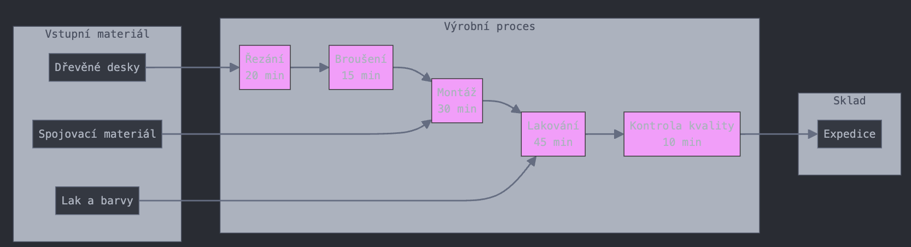
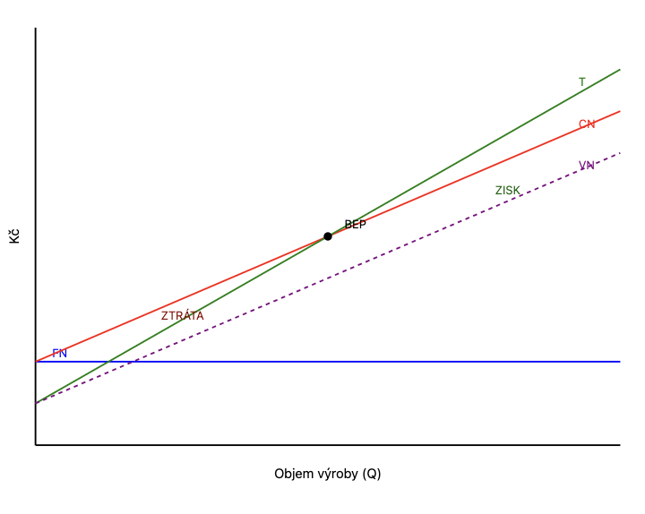
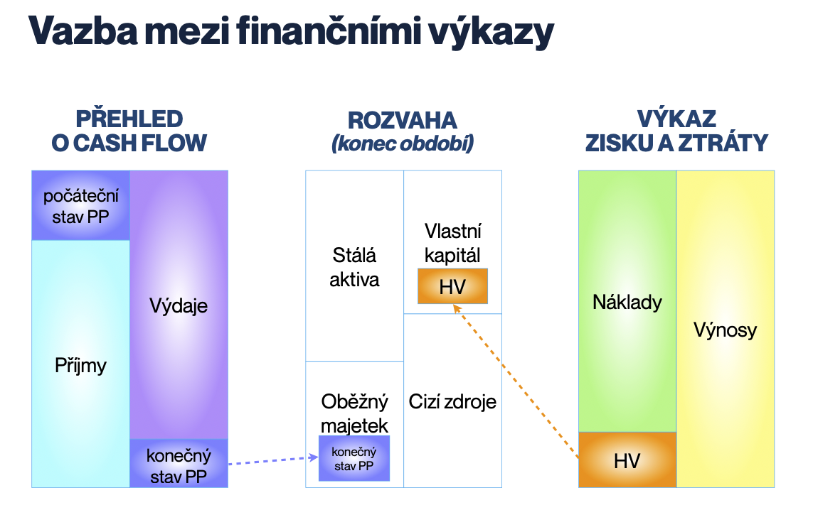
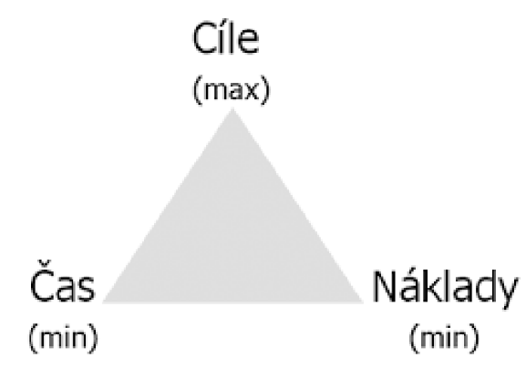

Globální podnikání a management
Obsah
- Obsah
- Výrobní činnost podniku
- Náklady podniku
- Kalkulace a kalkulační metody
- Cenová tvorba
- Finanční účetnictví
- Účetní výkazy
- Finanční analýza a měření výkonnosti podniku
- Obchodní korporace – osobní obchodní společnosti
- Obchodní korporace – kapitálové obchodní společnosti
- Závazky v obchodních vztazích, obchodně právní smlouvy
- Globalizace
- Evropská unie
- Mezinárodní ekonomické instituce – jejich úloha a význam
- Světová hospodářská krize
- Krizový management
- Projektové řízení
- Projektové řízení zdrojů
- Projektový tým, organizace a řízení projektu
- Studie proveditelnosti v projektovém řízení
- Etické nástroje managementu
Obsah
Podniková ekonomika I.
Výrobní činnost podniku (charakteristika výrobního procesu, druhy výrob, výrobní kapacita, modelace jednoduchého výrobního procesu, výrobní kapacita montážní a výrobní plochy).
Náklady podniku (charakteristika nákladů a jejich význam pro řízení, nákladové funkce, různá členění nákladů, bod zvratu – jeho vypovídající schopnost a grafické znázornění).
Podniková ekonomika II.
Kalkulace, kalkulační metody (význam kalkulací pro řízení, kalkulační systém, struktura nákladů v kalkulaci, kalkulace variabilních nákladů, kalkulace na bázi ABC).
Cenová tvorba (definice a vlastnosti ceny, cenová politika podniku, postup a metody pro stanovení prodejní ceny výrobku či služby; kalkulace a jejich využití při cenové tvorbě).
Účetnictví pro manažery
Finanční účetnictví (podstata, účel, právní úprava, vymezení účetní jednotky, principy účetnictví, základní prvky účetnictví, oceňování ve finančním účetnictví).
Účetní výkazy (rozvaha, výkaz zisku a ztráty, přehled o peněžních tocích: charakteristika, struktura, způsob sestavování a vypovídací schopnost, vzájemné souvislosti).
Finanční řízení podniku
Finanční analýza a měření výkonnosti podniku (náležitosti a struktura FA, podklady FA, principy a účel horizontální a vertikální FA, vybrané poměrové ukazatele; měření výkonnosti podniku – vybrané přístupy a ukazatele).
Obchodní právo
Obchodní korporace: osobní obchodní společnosti – právní úprava, vymezení jednotlivých osobních obchodních společností, výhody a nevýhody osobních obchodních společností pro společníky a obchodní partnery. Obchodní korporace: družstvo – právní úprava, charakteristika, příklady působení družstev v současné praxi.
Obchodní korporace: kapitálové obchodní společnosti – právní úprava, vymezení jednotlivých kapitálových obchodních společností, způsob vzniku, struktura orgánů, vzájemné srovnání, výhody a nevýhody kapitálových obchodních společností pro společníky a obchodní partnery.
Závazky v obchodních vztazích, obchodně právní smlouvy (závazek vs. smlouva, vznik závazku, proces uzavření smlouvy, změny a zánik závazků; způsoby zajištění a utvrzení závazků).
Politické a kulturní aspekty globálního podnikání
Globalizace (definice, historický vývoj, centra a periferie v minulosti a současnosti, stará a nová centra současné globalizace – Západ versus země BRICS).
Evropská unie (historický vývoj; orgány EU; pozice, přínosy a negativa členství ČR v EU; současnost a budoucnost EU, možnosti a meze dalšího vývoje).
Mezinárodní ekonomické instituce, jejich úloha a význam (Mezinárodní měnový fond, Světová banka, Světová obchodní organizace, APEC, NAFTA, MERCOSUR, ASEAN, G7, G20, OECD).
Světová hospodářská krize (krize v ekonomické teorii, historické hospodářské krize, zdroje současné hospodářské krize, krize a její projevy v různých světových regionech, krize v eurozóně, staré versus nové trhy, perspektivy světové ekonomiky).
Krizový management
Krizový management, charakter, fáze vývoje krize, proces řešení krize, nástroje krizového managementu.
Projektový management
Projektové řízení, vymezení projektu a zásady jeho strukturování, metody hodnocení efektivnosti projektu. Životní cyklus projektu.
Projektové řízení zdrojů: řízení času, řízení nákladů, řízení lidských zdrojů. Řízení projektových rizik. Řízení kvality.
Projektový tým, organizace a řízení projektu (formování projektového týmu, týmové role dle Belbina, fáze vývoje projektového týmu / skupiny, činnosti projektového manažera, organizační struktura projektu vs. organizační struktura podniku).
Studie proveditelnosti v projektovém řízení. Struktura a obsah studie proveditelnosti projektu, základní pomůcky a nástroje pro její tvorbu.
Společenská odpovědnost firem
Etické nástroje managementu – definice, podzákonné normy, etické kodexy (funkce, historie, aplikace). Společenská odpovědnost firem (CSR), principy udržitelnosti (ESG) a jejich souvislost s CSR. Mezinárodní (národní) standardy a certifikace v CSR (např. ISO, GRI, EMAS aj.), příklady etického labelingu v různých sektorech managementu (např. Fair Trade, Slow Fashion, FSC aj.). Sociální programy firem (příklady), firemní nadace, filantropie, donátorství, sponzoring
Výrobní činnost podniku
charakteristika výrobního procesu, druhy výrob, výrobní kapacita, modelace jednoduchého výrobního procesu, výrobní kapacita montážní a výrobní plochy
Výrobním procesem podniku rozumíme přeměnu základních výrobních faktorů na výrobky a služby. Výrobu můžeme členit dle různých kritérií
dle stupně mechanizace na ruční (práci vykonává člověk), mechanizovanou (práci vykonává stroj řízený člověk) a automatizovanou (práci vykonává autonomní stroj)
dle objemu produkce jednoho druhu výrobku na zakázkovou / kusovou (výroba jednoho nebo málo kusů výrobku), sériovou (výroba většího objemu v několika obměnách) a hromadnou / masovou (výroba obrovského objemu jednoho typu).
Modelace základního výrobního procesu
Pro modelaci využíváme parametr časový efektivní fond F_{e} - maximální možný čas realizace výroby za období. Pro jeho výpočet počítáme s F_{k} fondem kalendářním dnů v roce, F_{V} fondem volna, t_{z} časovými ztrátami na opravy, seřízení a údržby, s počtem směn a h počtem hodin v jedné směně.
F_{e}\lbrack h\rbrack = \left( F_{k} - F_{v} - t_{z} \right) \cdot s \cdot h
Druhým parametrem je celková pracnost P_{k} - čas realizace poptávaného množství na daném zařízení.
P_{K} = \sum_{}^{}{Q_{i} \cdot p_{k_{i}}}
Třetím parametrem je počet výrobních zařízení a. V praxi se tento počet zaokrouhluje vždy směrem nahoru.
a = \frac{P_{k}}{F_{e}}
Čtvrtým parametrem je koeficient zatížení k_{z} - poměr zatížení daného stroje nebo skupiny.
k_{z} = \frac{P_{k}}{F_{e} \cdot a^{0}}
Stanovení kapacity výrobní či montážní plochy
Výrobní kapacita je maximální objem výroby, kterého lze dosáhnout na dané výrobní nebo montážní ploše za optimálních podmínek v určitém časovém období.
Časový fond: může být kalendářní, nominální nebo využitelný.
Výpočet výrobní kapacity plochy:
V_{k}\ = \ P\ \times \ v\ \times \ č
V_{k} = výrobní kapacita
P = výrobní/montážní plocha v m²
v = výkon na 1m² za jednotku času
č = využitelný časový fond
Tímto způsobem vybíráme vhodné prostory k pronájmu či koupi. První parametrem porovnání je čistá plocha výroby či montáže M = CP - PP. Druhým je plocha jednoho pracoviště m. Dalšími jsou opět efektivní časový fond F_{E} a doba zpracování jednoho výrobku p_{k_{i}}.
Q_{M}\lbrack ks\rbrack = \frac{M \cdot F_{e}}{m \cdot p_{k_{i}}}
Příklad výrobního procesu

Materiálový tok
Celkový průběžný čas výroby: 120 minut
Mezi operacemi je potřeba počítat s manipulačním časem
Důležité jsou mezisklady mezi operacemi
Kapacitní výpočet
Pro 8hodinovou směnu:
Teoretická kapacita: 8 × 60 / 120 = 4 židle/směna
Reálná kapacita (80% využití): 3,2 židle/směna
Náklady podniku
charakteristika nákladů a jejich význam pro řízení, nákladové funkce, různá členění nákladů, bod zvratu – jeho vypovídající schopnost a grafické znázornění
Přehled těchto údajů najdeme ve Výkazu zisku a ztráty (tzv. výsledovka, VZZ).
Parametrem výkazu je hospodářský výsledek HV = V - N (výnosy mínus náklady), pozitivní hospodářský výsledek značí zisk, negativní ztrátu). Tržby vznikají prodejem výrobků a služeb (tzn. vystavením faktury), jsou součástí výnosů. Výnosy se skládají z tržeb, prodejem hmotného majetku, z finančních operací, mimořádných výnosů.
Náklady jsou reálnou spotřebou v peněžním vyjádřením. Náklady můžeme členit podle několika hledisek
druhové členění – členění dle druhu spotřebovaného vstupu (spotřeba materiálu a energie, služby, osobní náklady, odpisy, finanční náklady)
účelové členění – členění nákladů dle místa vzniku (výrobní, správní, odbytové, zásobovací), vztahu k procesu (technologické, náklady na obsluhu a řízení), vztah k výkonu (přímé, nepřímé)
kalkulační členění – náklady přímé (přímo vázané na jednotku produkce) a nepřímé (výstup kalkulačních metody)
členění dle objemu produkce – na náklady fixní a variabilní.
Fixní a variabilní náklady
Fixní náklady musí podnik hradit vždy, ačkoli neprovádí žádnou ekonomickou činnost. Příklady jsou nájem, odpisy, splátky úvěrů, mzdy, energie.
Variabilní náklady jsou závislé na objemu produkce podniku. Příklady jsou přímý materiál, přímé mzdy, ostatní přímé náklady (spotřeba energií).
Platí poté že celkové náklady N = FN + VN, celkové variabilní náklady VN = V \cdot Q.
Příjmy a výdaje
Přehled příjmů a výdajů je ve výkazu Cash Flow. Příjmem rozumíme reálné navýšení bankovního účtu a pokladny. Nejčastěji proplacením pohledávky odběratelem. Výdajem rozumíme reálné ponížení bankovního účtu a pokladny. Nejčastěji zaplacením pohledávky dodavateli či proplacením mezd.
V průběhu životního cyklu platí, že výnos vzniká vystavením faktury (a projeví se vznikem pohledávky), narozdíl od příjmu vznikajícího proplacením (projevujícího se navýšením bankovního účtu). Obdobný časový nesoulad vzniká mezi náklady (odpisy nově nakoupeného stroje) a výdaji (zaplacení faktury za stroj).
Nákladové funkce
Stěžejním členěním nákladů je členění dle produkce – náklady fixní a variabilní. Platí poté že celkové náklady N = FN + VN, celkové variabilní náklady VN = V \cdot Q (patří zde materiál, přímé mzdy, spotřeba energií ve výrobě).
Z toho odvodíme obecný tvar nákladové funkce $N = FN + V \cdot Q. Na tento tvar má dopad, zda podnik realizuje homogenní nebo nehomogenní produkci.
Homogenní (stejnorodá) produkce reprezentuje výrobu jednoho druhu výrobku / poskytování jednoho typu služby. Pro tento typ produkce platí, že jednotkové variabilní náklady V\left\lbrack \frac{Kč}{ks} \right\rbrack a objem produkce Q\lbrack ks\rbrack.
Nehomogenní produkce reprezentuje výrobu různých výrobků a služeb. Pro tento typ produkce platí, že průměrné variabilní náklady na jednu korunu produkce V^{*}\lbrack Kč\rbrack (variabilní složka nákladů z jedné koruny tržeb) a objem produkce vyjádřený objemem tržeb Q\lbrack Kč\rbrack. Nákladová funkce je primárně využívaná k plánování finanční zdrojů.
Metody stanovení nákladové funkce
První metodou je metoda dvou období. Vycházíme z posledních 12 kalendářních měsíců. V každém měsíci porovnáme objem produkce a spojené celkové náklady. Vybereme období s minimálním a maximálním objemem produkce, pro každé z nich sestavíme výchozí nákladovou funkci a získáme soustavu rovnic, ze které dokážeme odvodit FN a V.
Druhou metodou je metoda průměrů. Vycházíme z posledních 12 kalendářních měsíců. Sledovaná období se seřadí vzestupně, nebo sestupně, podle objemu produkce. Tato období se rozdělí na dvě poloviny a z nich průměrem sestavíme funkci pro maximální a minimální období. Dále pokračujeme stejně, jako v předchozí metodě.
Přesnější metodou je metoda průměrů, protože do výpočtu vstupují všechna sledovaná období.
Bod zvratu
 Bod zvratu je množství produkce, při kterém se celkové náklady (CN) rovnají celkovým tržbám. V tento okamžik podnik nedosahuje zisku ani ztráty.
BEP = \frac{FN}{p - vn}
Vím li, že N = FN + vn \cdot Q a T = p \cdot Q, tak jsem schopen odvodit tento vzorec.
Kalkulace a kalkulační metody
význam kalkulací pro řízení, kalkulační systém, struktura nákladů v kalkulaci, kalkulace variabilních nákladů, kalkulace na bázi ABC
Kalkulační metody jsou postupy pro stanovení nákladů na kalkulační jednici – na výrobek nebo na službu. Výstup kalkulačních metod se používá pro stanovení prodejní ceny.
Náklady členíme na přímé (lze přímo stanovit v hodnotě na danou jednici – přímý materiál PM, přímé mzdy PMZ, ostatní přímé náklady OPN) a nepřímé (nelze přímo vyčíslit, jedná se o režijní náklady - výrobní režie VR (prostory, výrobní zařízení), správní režie SR (administrativa, prostory, provoz), zásobovací režie ZR (sklady), odbytová režie OR (prodejní prostory)).
Všechny přímé a nepřímé náklady zachycuje typový kalkulační vzorec. Jsme schopni spočítat vlastní náklady výroby (PM + PMZ + OPN + VR), poté vlastní náklady výkonu (... + SR), poté úplné vlastní náklady výkonu n_{j} (\ldots + ZR + OR).
Kalkulační systém představuje soubor kalkulací v podniku a vazeb mezi nimi. Jedná se o nástroj řízení nákladů a tvorby cen.
Předběžné kalkulace – propočtová kalkulace (sestavuje se před zahájením výroby), plánová kalkulace (sestavuje se na určité období a vychází z technickohospodářských norem), Operativní kalkulace (reaguje na změny výrobních podmínek)
Výsledná kalkulace – slouží pro kontrolu hospodárnosti, sestavuje se po dokončení výkonu
Kalkulace prostým dělením
Metoda je použitelná pouze pro oblast s homogenní produkcí.
n_{j} = \frac{N}{Q}
Kalkulace ekvivalenčních čísel
Metoda je použitelná pouze pro oblast nehomogenní produkce, a to zejména v případě výroby ze stejného materiálu, tvarově podobné výrobky nebo výrobu v typových řadách.
V prvním kroku se stanoví součet přepočítaných jednic SPJ (stanovím základní výrobek s poměrovým číslem 1, nákladové položky ostatních výrobků se budou k tomuto základnímu vztahovat).
SPJ = \sum_{k = A}^{Z}{i_{k} \cdot Q_{k}}
V dalším kroku pomocí součtu vypočítám nákladovou položku na základní výrobek. Nákladové položky ostatních výrobků se stanoví součinem příslušného ekvivalenčního čísla a nákladů na základní výrobek.
Přirážková kalkulace
Metoda je použitelná pouze pro oblast nehomogenní produkce. Princip je postaven na stanovení na stanovení režijní přirážky RP - podíl režijních nákladů RN a rozvrhové základny RZ. Rozvrhovou základnu si podnik volí individuálně (v praxi v závislosti na konkrétních režii, může být použito jakékoli veličiny, nejčastěji spotřeba času ve výrobě nebo objem produkce).
Kalkulace variabilních nákladů
Metoda se používá pro optimalizaci výrobkového portfolia – zjišťujeme, zda je vhodné do výroby zařadit nový výrobek, zda vyřadit ztrátový výrobek nebo vyrábět jeden výrobek na úkor druhého. V praxi se porovnává variabilní kalkulace před změnou s variabilní kalkulací po změně.
Nejčastěji využíváme dvoustupňové variabilní kalkulace. Vycházíme z portfolia výrobků a kalkulujeme příspěvek na úhradu 1 {PÚ}_{1} = T - VN (pokud vyjde záporně, výrobek je třeba vyřadit), poté kalkulujeme příspěvek na úhradu 2 PÚ_{2} = PÚ_{1} - PFN (přímé fixní náklady). Pokud od celkového příspěvku na úhradu 2 odečteme společné fixní náklady, dostáváme hospodářský výsledek HV = PÚ_{2} - SFN. Příspěvek na úhradu 2 porovnává pozici výrobku v rámci portfolia – zda je Hvězda apod.
Kalkulace na bázi ABC
Metoda se používá pro přesnější alokaci režijních nákladů k výkonům pomocí aktivit (činností). Klíčové je určení skutečných příčin vzniku nákladů – náklady jsou přiřazovány výkonům přes aktivity, které jsou pro jejich tvorbu nezbytné. Sledujeme tedy jak a proč náklady vznikají, nikoliv jen kde.
V praxi postupujeme ve třech krocích:
nejprve náklady přiřadíme aktivitám (např. seřizování strojů, kontrola kvality),
pak určíme vztahové veličiny aktivit (např. počet seřízení, počet kontrol)
nakonec vypočteme náklady na jednotku aktivity, které přiřadíme výkonům podle jejich skutečné spotřeby aktivit.
Metodu využíváme zejména v podnicích s vysokým podílem režijních nákladů, různorodou výrobou a tam, kde tradiční kalkulační metody selhávají v přesnosti (např. jeden výrobek spotřebovává výrazně více kontrolních operací než druhý, ale režie jsou přiřazovány oběma stejně). ABC odhaluje skutečnou nákladovou náročnost výkonů a umožňuje optimalizovat podnikové procesy.
Cenová tvorba
definice a vlastnosti ceny, cenová politika podniku, postup a metody pro stanovení prodejní ceny výrobku či služby; kalkulace a jejich využití při cenové tvorbě
Cena je peněžní vyjádření hodnoty výrobku nebo služby a určuje množství peněz, které jsou subjekty ochotny směnit za jednotku zboží. V tržní ekonomice plní ceny tři základní funkce: informační (poskytuje informace o situaci na trhu), alokační (ovlivňuje rozdělení zdrojů mezi subjekty) a stimulační (motivuje k efektivní výrobě a racionální spotřebě).
V praxi na cenu působí jak vnitřní faktory (výrobní náklady, marketingová strategie, podnikové cíle), tak vnější faktory (konkurence, poptávka, ekonomické cykly, inflace). Při tvorbě ceny musíme zohlednit všechny tyto vlivy a najít optimální cenovou úroveň, která zajistí jak konkurenceschopnost, tak požadovanou ziskovost.
Ceny jsou tvořeny jednotlivými složkami – náklady, marže a zisk, přičemž ve struktuře ceny mohou být zahrnuty i nepřímé daně (DPH, spotřební daň). Výsledná cena by měla pokrýt veškeré náklady spojené s výrobou a distribucí produktu a generovat přiměřený zisk.
Cenová politika je součástí marketingového mixu a vyjadřuje způsob, jakým podnik stanovuje, upravuje a diferencuje ceny svých produktů. Realizuje se prostřednictvím cenových strategií, které vycházejí z pozice firmy na trhu a jejích cílů (maximalizace zisku, tržního podílu nebo obratu). V praxi rozlišujeme tři základní přístupy k tvorbě cen:
nákladově orientovaný (cena vychází z úplných nákladů a požadované míry zisku),
poptávkově orientovaný (cena se odvíjí od hodnoty vnímané zákazníkem),
konkurenčně orientovaný (cena se stanovuje ve vztahu k cenám konkurence).
Součástí cenové politiky jsou také nástroje jako množstevní slevy, věrnostní programy, sezónní výprodeje nebo cenová diferenciace podle segmentů trhu. Tyto nástroje umožňují pružně reagovat na změny tržních podmínek a maximalizovat celkový zisk podniku.
Cenová tvorba
Začínáme průzkumem trhu pro stanovení očekávané poptávky. Poté stanovíme náklady na kalkulační jednici. Provedeme porovnání nákladů se stejnými či konkurenčními výrobky. Vybereme metodu cenové tvorby a na základě výstupu stanovíme výslednou prodejní cenu.
Metoda cenové tvorby pomocí ziskové přirážky
Podnik si stanoví ziskovou přirážku zp z jednicových nákladů.
C = n_{j} + z_{p} \cdot n_{j}
Metoda cenové tvorby pomocí rentability z investovaného kapitálu
Používáme pouze v případě, pokud je nutná vstupní investice IN a z ní požadovaná rentabilita ROI.
C = n_{j} \cdot \frac{ROI \cdot IN}{Q}
Metoda cenové tvorby pomocí zákazníkem vnímané hodnoty
První možností aplikace je použití cenové diskriminace.
Druhou možností je stanovení marketingovým průzkumem, která stanoví horní hranici prodejní ceny HHC (maximální prodejní cena, kterou je zákazník ochoten za výsledek připlatit).
HHC = Průměrná\ cena \cdot \frac{Body\ našeho\ výrobku}{Průměrný\ počet\ bodů}
Oproti tomu stanovujeme dolní hranici prodejní ceny DHC, která motivuje výrobce k výrobě a prodeji výrobku.
Využití kalkulace při cenové tvorbě
Kalkulace jsou nástrojem pro výpočet nákladů a následně ceny na kalkulační jednici (výrobek, služba). V cenové tvorbě využíváme dva typy kalkulací: předběžné (plánované náklady) a výsledné (skutečné náklady), přičemž jejich porovnáním získáváme informace o efektivnosti výroby.
V praxi se pro cenovou tvorbu využívá kalkulační vzorec, který zahrnuje přímé náklady (materiál, mzdy), nepřímé náklady (výrobní, správní a odbytová režie) a zisk. U zakázkové výroby se často používá individuální kalkulace, zatímco u sériové výroby se pracuje s průměrnými náklady na jednotku produkce. Kalkulace tvoří dolní hranici ceny – minimální cenu, pod kterou by prodej byl ztrátový.
Kromě základních kalkulací se v cenové tvorbě uplatňují i specifické metody jako target costing (od cílové ceny k nákladům), kalkulace ABC (přesnější alokace režijních nákladů) nebo dynamická kalkulace (zohledňuje změny nákladů při různém využití kapacity). Tyto metody umožňují přesnější stanovení nákladů a následně i konkurenceschopnější cenovou tvorbu.
Finanční účetnictví
podstata, účel, právní úprava, vymezení účetní jednotky, principy účetnictví, základní prvky účetnictví, oceňování ve finančním účetnictví
Úkolem účetnictví v podniku je evidence všech operací, které lze finančně vyjádřit a které ovlivňují majetek a jeho zdroje krytí. Součástí je také zachycení průběhu předmětu podnikání, tzn. výnosů a nákladů. Smyslem účetnictví je evidovat hospodářské transakce a podat informace pro vnitřní řízení systémů. Rozlišujeme:
Finanční účetnictví – cílem je zaznamenat a následně zobrazit firemní procesy a činnosti v čase;
Daňové účetnictví – cílem je stanovit základ daně z příjmu, resp. Ostatní daňové pohledávky a závazky;
Manažerské účetnictví – cílem je poskytnout informace pro řízení podniku.
Mezinárodně uznáváme všeobecně uznávané účetní principy USA (US GAAP), nebo mezinárodní standardy účetního výkaznictví (IFRS). V České republice používáme pro regulaci:
Zákon č. 563/1991 Sb., o účetnictví
Prováděcí vyhlášky (jednotlivé vyhlášky pro jednotlivé obory – 500 pro podnikatele, banky, pojišťovny apod.)
České účetní standardy
Vnitropodnikové směrnice
Předmětem záznamů v účetnictví jsou jednoznačně určené hospodářské jevy. Evidence hospodářských jevů se vede za určité časové období. Zjišťuje se skutečný výsledek hospodaření a skutečný stav a pohyb majetku a závazků.
Jednotlivé hospodářské operace jsou zaznamenávány písemně vždy na základě účetních dokladů.
Hospodářské jevy se evidují v peněžních jednotkách a v některých případech i v jednotkách hmotných.
Hospodářské jevy se zaznamenávají úplně, nepřetržitě a soustavně.
Údaje účetnictví musí být přesné, spolehlivé a průkazné.
Náklady představují vstupy do účetní jednotky. Lze je definovat jako spotřebu práce a prostředků v peněžním vyjádření.
Výnosy představují pro účetní jednotku ekonomický přínos. Lze je definovat jako v penězích oceněný výkon.
Účet plní v účetnictví následující funkce:
umožňuje třídění údajů o operacích zachycených v účetních dokladech;
zabezpečuje sledování příslušného druhu prostředků či zdrojů;
usnadňuje příjem informací u uživatelů;
zajišťuje dvoustrannost při třídění údajů;
třídí a sumarizuje údaje z dokladů ve vzájemných souvislostech.
Rozlišujeme následující typy účtů:
Rozvahové (aktivní / pasivní)
Výsledkové (nákladové / výnosové)
Závěrkové
Podrozvahové
Účetní jednotka je někdo vyjmenovaný v zákoně, jež je povinen vést účetnictví, účtovat o stavu a pohybu majetku a jiných aktiv, závazků a jiných pasiv, nákladech, výnosech a výsledku hospodaření.
právnické osoby, které mají sídlo na území České republiky,
zahraniční právnické osoby a zahraniční jednotky, které jsou podle právního řádu, podle kterého jsou založeny nebo zřízeny, účetní jednotkou nebo jsou povinny vést účetnictví,
organizační složky státu,
fyzické osoby, které jsou jako podnikatelé zapsány v obchodním rejstříku,
ostatní fyzické osoby, které jsou podnikateli, pokud jejich obrat podle zákona o dani z přidané hodnoty přesáhl za bezprostředně předcházející kalendářní rok částku 25 000 000 Kč,
ostatní fyzické osoby, které vedou účetnictví na základě svého rozhodnutí,
ostatní fyzické osoby, které jsou podnikateli a jsou společníky sdruženými ve společnosti, pokud alespoň jeden ze společníků sdružených v této společnosti je účetní jednotkou,
ostatní fyzické osoby, kterým povinnost vedení účetnictví ukládá zvláštní právní předpis
svěřenské fondy podle občanského zákoníku,
fondy obhospodařované penzijní společností podle zákona upravujícího důchodové spoření a doplňkové penzijní spoření,
investiční fondy bez právní osobnosti podle zákona upravujícího investiční společnosti a investiční fondy,
ty, kterým povinnost sestavení účetní závěrky stanoví zvláštní právní předpis nebo které jsou účetní jednotkou podle zvláštního právního předpisu.
Účetní jednotky dělíme na
mikro účetní jednotka (obrat 18M);
malá účetní jednotka (obrat 200M);
střední účetní jednotka (obrat 1,000M);
velká účetní jednotka.
Účetní jednotky oceňují majetek a závazky k okamžiku uskutečnění účetního případu nebo ke konci rozvahového dne.
Princip historických cen - (také označovaný jako princip pořizovacích cen) je základní účetní princip, který stanovuje, že majetek a závazky by měly být oceňovány a vykazovány v účetnictví v hodnotách odpovídajících nákladům vynaloženým při jejich pořízení (historické náklady), nikoliv v jejich aktuálních tržních hodnotách.
Realizační princip - (také známý jako princip realizace nebo princip realizace výnosů) je jedním ze základních účetních principů, který určuje, kdy má být výnos zaúčtován do účetního období. Podle realizačního principu se výnosy účtují v tom účetním období, ve kterém byly realizovány, bez ohledu na to, kdy dojde k příjmu peněz.
Účetní výkazy
rozvaha, výkaz zisku a ztráty, přehled o peněžních tocích: charakteristika, struktura, způsob sestavování a vypovídací schopnost, vzájemné souvislosti
Rozvaha – majetek vyjadřuje, co obchodní společnost vlastní a kapitál komu co patří. Jedná se o okamžitý přehled o majetku i kapitálu, podoba je dána přílohou vyhlášky 500.
Aktiva – představují pro podnik budoucí ekonomický užitek, aktivum musí být spolehlivě ocenitelné v penězích
Pohledávky za upsaný vlastní kapitál
Stálá aktiva – dlouhodobý nehmotný majetek, dlouhodobý hmotný majetek, dlouhodobý finanční majetek
Oběžná aktiva – zásoby, pohledávky, krátkodobý finanční majetek, peněžní prostředky
Časové rozlišení aktiv
Pasiva – závazek, jehož plnění v budoucnu vyvolá snížení aktiv podniku nebo operace vyvolávací závazek proběhla v minulosti
Vlastní kapitál – základní kapitál, ážio a kapitálové fondy, fondy ze zisku, výsledek hospodaření minulých let, výsledek hospodaření běžného účetního období
Cizí zdroje – rezervy, dlouhodobé závazky, krátkodobé závazky
Časové rozlišení pasiv
V rámci rozvahy musí oplatit bilanční rovnováha AKTIVA = PASIVA.
Výkaz zisku a ztráty definuje hospodářský výsledek za dané období jako rozdíl výnosu a nákladů. Rozeznáváme dělení na druhové a účelové členění. Výnosy jsou značeny římskými čísly, náklady velkými písmeny.
Tržby za prodej výrobků a služeb
Tržby za prodej zboží
Výkonová spotřeba
Změna stavu zásob vlastní činnosti
Aktivace
Osobní náklady
Provozní výsledek hospodaření
Výnosy z dlouhodobého finančního majetku
Náklady vynaložené na prodané podíly
Finanční výsledek hospodaření
Výsledek hospodaření před zdaněním
Daň z příjmu
Výsledek hospodaření po zdanění
Čistý obrat za účetní období
Přehled o peněžních tocích (cash flow) – definuje pojmy příjem (přírůstek peněžních prostředků) a výdaj (úbytek finančních prostředků). Sestavujeme buďto přímou metodou nebo nepřímou metodou.
Potáčení stav peněžních prostředů
Peněžní tok
Čistý peněžní tok z provozní činnosti
Čistý peněžní tok vztahující se k investiční činnosti
Čistý peněžní tok vztahující se k finanční činnosti
Konečný stav peněžních prostředků

Finanční analýza a měření výkonnosti podniku
náležitosti a struktura FA, podklady FA, principy a účel horizontální a vertikální FA, vybrané poměrové ukazatele; měření výkonnosti podniku – vybrané přístupy a ukazatele.
Finanční analýza je systematický rozbor finančních dat podniku, který poskytuje informace o finančním zdraví firmy. Vychází z účetních výkazů (rozvaha, výkaz zisku a ztráty, cash flow) a dalších informačních zdrojů, které se analyzují pomocí různých analytických metod. Rozvaha poskytuje přehled o struktuře majetku a zdrojích jeho krytí, výkaz zisku a ztráty informuje o tvorbě a užití výsledku hospodaření a výkaz cash flow zachycuje pohyb peněžních toků.
V praxi se finanční analýza člení na dvě základní části:
kvalitativní (fundamentální) analýzu, která hodnotí vnitřní a vnější prostředí firmy,
kvantitativní (technickou) analýzu, která zpracovává ekonomická data matematicko-statistickými metodami.
Struktura FA typicky zahrnuje analýzu absolutních ukazatelů (horizontální, vertikální), rozdílových ukazatelů (čistý pracovní kapitál), poměrových ukazatelů a souhrnných indexů.
V praxi se kromě účetních výkazů využívají i další zdroje jako výroční zprávy, příloha k účetní závěrce, data z manažerského účetnictví, podnikové statistiky, prognózy, externí data z odvětví a makroekonomické údaje. Kvalita vstupních dat přímo ovlivňuje vypovídací schopnost finanční analýzy, proto je důležité pracovat s úplnými a věrohodnými podklady.
Horizontální analýza sleduje vývoj v čase (meziroční změny), zatímco vertikální analýza zkoumá podíl dílčích položek na celku.
V praxi se horizontální analýza provádí porovnáním hodnot stejných položek ve dvou či více obdobích, přičemž se sledují jak absolutní změny (v Kč), tak relativní změny (v %).
Vertikální analýza vyjadřuje procentní podíl jednotlivých položek na zvolené základně (u rozvahy celková aktiva/pasiva, u VZZ celkové výnosy/tržby).
Tyto analýzy umožňují identifikovat trendy a změny ve struktuře majetku, zdrojů, nákladů a výnosů.
Ukazatele rentability
Ukazatele rentability ukazují výnosnost podniku. Vycházíme z hospodářského výsledku – ukazujeme vztah mezi hospodářským výsledkem a vloženými zdroji. Pro vyčíslení potřebujeme výkaz zisků a ztrát (pro hospodářský výsledek) a rozvahu (pro vložené zdroje).
Rentabilita celkového kapitálu – poměr mezi hospodářským výsledek a celkovou úrovní pasiv.
RCK = \frac{HV}{VK + CK}
Rentabilita vlastního kapitálu (ROE) – poměr mezi hospodářským výsledkem a vlastním kapitálem.
ROE = \frac{HV}{VK}
Rentabilita celkových aktiv (ROA) – poměr mezi hospodářským výsledkem a celkovými aktivy. (stejná hodnota jako rentabilita celkového kapitálu)
ROA = \frac{HV}{SA + OA}
Rentabilita tržeb – poměr mezi hospodářským výsledkem a celkovými tržbami. (kolik tvoří zisk z jedné koruny tržeb)
RT = \frac{HV}{T}
Ukazatele aktivity
Ukazatele aktivity ukazují, jak efektivně pro naší podnikatelskou aktivitu využíváme majetku. Vycházíme z tržeb.
Obrat stálých aktiv – kolikrát se stála aktiva obrátí v tržbách, očekávaná hodnota je \approx 5.
OSA = \frac{T}{SA}
Obrat celkových aktiv – kolikrát se aktiva obrátí v tržbách.
OCA = \frac{T}{SA + OA}
Obrat pohledávek ve dnech – průměrná doba splatnosti faktur.
OP_{d} = \frac{KP \cdot 365}{T}
Obrat zásob ve dnech – průměrná doba od naskladnění po peněžní příjem.
OP_{d} = \frac{Z \cdot 365}{T}
Ukazatele likvidity
Ukazatele likvidity ukazují, jak rychle je podnik schopen uhradit své závazky.
Běžná likvidita (likvidita 3. stupně) – poměr oběžných aktiv a krátkodobých závazků, očekávaná hodnota mezi 1,5 až 2,5.
LIQ_{3} = \frac{OA}{KCK}
Rychlá likvidita (likvidita 2. stupně) – poměr oběžných aktiv bez zásob a krátkodobých závazků, očekávaná hodnota mezi 1 až 1,5.
LIQ_{2} = \frac{OA - zásoby}{KCK}
Okamžitá likvidita (likvidita 1. stupně) – poměr krátkodobého finančního majetku a krátkodobých závazků, očekávaná hodnota okolo 0,5.
LIQ_{1} = \frac{pen.prostředky\ (KFM)}{KCK}
Ukazatele zadluženosti
Ukazatele zadluženosti ukazují, jakou mírou podnik spoléhá na cizí kapitál.
Celková zadluženost – podíl cizího kapitálu na celkových pasivech.
CZ = \frac{CK}{VK + CK},CZ = DZ + BZ
Dlouhodobá zadluženost – podíl dlouhodobých závazků na celkových pasivech.
DZ = \frac{DCK}{VK + CK}
Běžná zadluženost – podíl krátkodobých závazků na celkových pasivech.
BZ = \frac{KCK}{VK + CK}
Měření výkonnosti podniku
Výkonnost podniku měříme pomocí tradičních (finančních) ukazatelů a moderních přístupů. Z finančních ukazatelů jsou to především poměrové ukazatele (rentabilita, likvidita, aktivita, zadluženost) a souhrnné ukazatele (Altmanovo Z-skóre, IN indexy).
Altmanovo Z-skóre
Využívá váženého součtu vybraných finančních ukazatelů, kde váhy byly stanoveny na základě statistické analýzy velkého množství podniků, které zbankrotovaly nebo naopak prosperovaly.
V praxi se Altmanův model používá ve dvou verzích – pro firmy obchodované na burze (Z-skóre) a pro ostatní firmy (Z'-skóre). Model zahrnuje pět ukazatelů: pracovní kapitál/aktiva, nerozdělený zisk/aktiva, EBIT/aktiva, tržní hodnota VK/cizí zdroje a tržby/aktiva. Hodnota Z\ > \ 2,99 znamená prosperitu, Z\ < \ 1,81 vysoké riziko bankrotu.
IN indexy
IN index je bankrotní model vytvořený přímo pro české podniky manžely Neumaierovými. V průběhu let byly vyvinuty čtyři varianty (IN95, IN99, IN01 a IN05), které reflektují měnící se ekonomické podmínky v ČR. Každá novější verze zpřesňuje vypovídací schopnost modelu.
V praxi se nejvíce využívá IN05 (poslední verze), který kombinuje bankrotní i bonitní přístup. Index pracuje s pěti ukazateli: aktiva/cizí zdroje, EBIT/nákladové úroky, EBIT/aktiva, výnosy/aktiva a oběžná aktiva/krátkodobé závazky.
Hodnota IN05\ > \ 1,6 znamená uspokojivou finanční situaci, IN05\ < \ 0,9 značí vážné finanční problémy a hodnoty mezi 0,9-1,6 představují šedou zónu.
Modernější metody se zaměřují na tvorbu hodnoty pro vlastníky a zahrnují i nefinanční aspekty výkonnosti. Klíčový je ukazatel EVA (ekonomická přidaná hodnota), který měří ekonomický zisk po odečtení všech nákladů včetně nákladů na vlastní kapitál. Komplexní pohled poskytuje BSC (Balanced Scorecard), který hodnotí výkonnost ve čtyřech perspektivách: finanční, zákaznické, procesní a učení se a růstu.
Obchodní korporace – osobní obchodní společnosti
Obchodní korporace: osobní obchodní společnosti – právní úprava, vymezení jednotlivých osobních obchodních společností, výhody a nevýhody osobních obchodních společností pro společníky a obchodní partnery. Obchodní korporace: družstvo – právní úprava, charakteristika, příklady působení družstev v současné praxi.
Obchodní společnosti slouží k organizaci lidské činnosti a alokaci zdrojů, efektivnějšímu uskutečňování podnikatelských aktivit. Obchodní společnost má právní osobnost uznanou státem, která je odlišná od svých tvůrců/zakladatelů. Osobní obchodní společnosti mají následující znaky:
Společníci ručí za splnění závazků společnosti solidárně a neomezeně celým svým majetkem.
Společnost nemá profesionální management – řídí ji sami společníci.
Podíly na osobních obchodních společnostech jsou nepřevoditelné.
Veřejná obchodní společnost (v. o. s.) je společnost alespoň 2 osob, které se účastní na jejím podnikání nebo správě jejího majetku a ručí za její dluhy společně a nerozdílně v neomezeném rozsahu. Společníci mají osobní účast na řízení společnosti (neexistuje vnitřní struktura orgánů). Společníci nemají vkladovou povinnost a zánik účasti jednotlivých společníků působí zánik společnosti jako takové.
Společník může mít pouze jeden podíl který nesmí být představován cenným papírem. Podíl nelze převádět, rozdělit nebo zastavit – může být však předmětem spoluvlastnictví.
V.o.s. se zakládá společenskou smlouvou písemnou formou s úředně ověřenými podpisy. V.o.s. vzniká zápisem do obchodního rejstříku.
V.o.s. je řízena pouze svými komplementáři, kteří hlasují rovnoměrně (každý má jeden hlas) pokud není určeno jinak.
V.o.s. je reprezentována každým svým společníkem.
Komanditní společnost (k. s.) má dva druhy společníků – neomezeně ručící společník tzv. komplementář s podobným postavením jako ve v.o.s., a omezeně ručící společník tzv. komandista (má povinný majetkový vklad do základního kapitálu společnosti, nemusí se osobně účastnit na aktivitách společnosti).
K.s. se zakládá společenskou smlouvou písemnou formou s úředně ověřenými podpisy. K.s. vzniká zápisem do obchodního rejstříku.
K.s. je řízena pouze svými společníky, kteří hlasují rovnoměrně (každý má jeden hlas) pokud není určeno jinak. V případě, že nejde o hlasování příslušné statutárnímu orgánu, rozhodují všichni společníci – přičemž komplementáři a komandista hlasují zvlášť.
K.s. je reprezentována každým svým komplementářem. Statutárním orgánem nemůže být třetí osoba ani komandista.
Družstvo je společenství neuzavřeného počtu osob (nejméně však tři), které je založeno za účelem vzájemné podpory svých členů nebo třetích osob, případně za účelem podnikání. Počet jeho členů není uzavřený – k přijetí dalšího člena do družstva není zapotřebí změna zakladatelského právního jednání. Má proměnlivý základní kapitál.
Zakládá se tradičním způsobem na ustavující schůzi nebo dohodou zakladatelů na obsahu stanov.
Vzniká zápisem do obchodního rejstříku.
Družstvo má následující organizační strukturu:
Členská schůze – nejvyšší orgán družstva, rozhoduje o nejdůležitějších záležitostech, může být nahrazena dílčí členskou schůzí.
Shromáždění delegátů – zprostředkované rozhodování u velkých družstev pomocí delegátů.
Představenstvo – tři členové, obchodní vedení družstva, zastupování na venek
Kontrolní komise – kontrolní orgán družstva, nezávislá na ostatních orgánech
Příkladem působnosti družstva je
Malé družstvo (bytové družstvo)
Sociální družstvo – podpora sociální soudružnosti za účelem sociální integrace osob do společnosti
Obchodní korporace – kapitálové obchodní společnosti
Obchodní korporace: kapitálové obchodní společnosti – právní úprava, vymezení jednotlivých kapitálových obchodních společností, způsob vzniku, struktura orgánů, vzájemné srovnání, výhody a nevýhody kapitálových obchodních společností pro společníky a obchodní partnery.
Obchodní společnosti slouží k organizaci lidské činnosti a alokaci zdrojů, efektivnějšímu uskutečňování podnikatelských aktivit. Obchodní společnost má právní osobnost uznanou státem, která je odlišná od svých tvůrců/zakladatelů. Osobní obchodní společnosti mají následující znaky:
Společníci nemohou přijít o více, než do společnosti vložili, finanční problémy některého ze společníků neohrozí ostatní společníky (diverzifikace rizika).
Společnost je řízená profesionálním managementem – existuje prevence střetu zájmu společníka a člena statutárního orgánů.
Podíly jsou volně převoditelné, existence společnosti není závislá na identitě jejích společníků.
Společnost s ručením omezeným (s. r. o.) je právnická osoba, kapitálová společnost povinně vytvářející kapitál z vkladů všech společníků. Společníci za závazky ručí omezeně – společně a nerozdílně pouze do výše, v jaké nesplnili svou vkladovou povinnost. Společnost může být založena i za jiným účelem, než je podnikání a může být i jednočlenná.
Založení s.r.o. probíhá kvalifikovanou formou zakladatelského jednání – uzavření společenské smlouvy.
S.r.o. vzniká zápisem do obchodního rejstříku.
Mezi obligatorní orgány patří valná hromada a jednatel. Fakultativním orgánem je poté dozorčí rada nebo další určené společenskou smlouvou.
Volený orgán s.r.o. je volen do této funkce – jednatel, likvidátor nebo člen dozorčí rady.
Nevolený orgán s.r.o. je dán právním postavením – valná hromada.
Společník má právo na informace, právo podílet se na řízení společnosti, právo na podíl na zisku, právo na podíl na likvidačním zůstatku, právo na vypořádací podíl, právo podíl převést, předkupní právo k prodávanému uvolněnému podílu. Společník má vkladovou povinnost, povinnost loajality a povinnost odevzdat kmenový list.
Akciová společnost (a. s.) je klasická forma kapitálové společnosti povinně vytvářející kapitál v zákonné výši. Akcionáři se na řízení a správě společnosti zásadně nepodílí – správu společnosti delegují na profesionální management (představenstvo, případně správní rada). Existence společnosti není vázaná na účast konkrétních akcionářů, akcie jsou převoditelné a zákonem je stanovena soustava vnitřních orgánů, které společnost řídí. Akcie jsou poté cenné papíry, do nichž jsou inkorporována práva akcionáře.
Zakladatelským dokumentem jsou stanovy, kde není omezen počet zakladatelům. A.s. vzniká zápisem do obchodního rejstříku.
Valná hromada je nejvyšším orgánem společnosti, je tvořena všemi přítomnými akcionáři, povinně se vytváří zápis z jednání a přijatá usnesení.
Rozhodování o statusových věcech (změna stanov, přeměna akciové společnosti)
Rozhodování o majetkových otázkách (převod či zastavení závodu společnosti, nabytí majetku od zakladatele nebo akcionáře)
Rozhodnutí týkající se akcionářů (souhlas k převodu akcií na jméno)
Rozhodnutí týkající se organizace společnosti (volba a odvolání členů představenstva, dozorčí či správní rady, pozastavení funkce člena statutárního orgánu).
Monoistický systém řízení – správní rada (dělená povaha)
Dualistický systém řízení – představenstvo a dozorčí rada
Představenstvo – obchodní vedení společnosti, zastupuje ve všech věcech společnost, má zbytkovou působnost.
Dozorčí rada = kontrolní orgán, dohlíží na výkon působnosti představenstva, přezkoumává účetní závěrku.
Závazky v obchodních vztazích, obchodně právní smlouvy
závazek vs. smlouva, vznik závazku, proces uzavření smlouvy, změny a zánik závazků; způsoby zajištění a utvrzení závazků
Závazek je zákonem vymezen jako vztah věřitele a dlužníka, z něhož vzniká právo na plnění typu něco dát, konat, něčeho se zdržet nebo něco strpět. Pojem závazku vymezuje „závaznost“, tzn. nelze závazek samotný změnit bez ujednání stran. Smlouva je dvoustranné či vícestranné právní jednání, kterým vznikají vzájemná práva a povinnosti smluvních stran, tedy závazky.
Vznik závazku – Závazky vznikají z právních jednání (smlouvy), z protiprávních činů (deliktů) nebo z jiných právních skutečností.
Ze smlouvy – ujednání stran o vzájemných právech a povinnostech
Z deliktů – porušení zákonné povinnosti nebo zasažení do absolutního práva jiného
Z bezdůvodného obohacení – získání majetkového prospěchu bez právního důvodu
Z nepřikázaného jednatelství – obstarání cizí záležitosti bez předchozího svolení
Z jiných právních skutečností stanovených zákonem
Proces uzavření smlouvy
Návrh (nabídka) - jednání, které je adresováno jedné nebo více osobám a vyjadřuje vůli navrhovatele být vázán v případě přijetí
Přijetí návrhu (akceptace) - včasné a bezvýhradné přijetí návrhu adresátem
Uzavření smlouvy – okamžik, kdy akceptace návrhu dojde navrhovateli
Obchodní podmínky – mohou být součástí smlouvy, pokud byly ke smlouvě přiloženy nebo byly stranám známy
Obchodní podmínky jsou nepřímým smluvním ujednáním, přičemž se stávají součástí smlouvy, jakmile s tím strany projeví souhlas. Dělí se na všeobecné obchodní podmínky odborných nebo zájmových organizací, všeobecné obchodní podmínky jedné smluvní strany a všeobecné obchodní podmínky sjednané stranami.
Změny závazků
Změna subjektů závazku
Postoupení pohledávky – převod pohledávky věřitelem na nového věřitele
Převzetí dluhu – převzetí dluhu dlužníka novou osobou
Přistoupení k dluhu – třetí osoba se zavazuje vedle původního dlužníka
Cese smlouvy – převod všech práv a povinností z jedné osoby na druhou
Změna obsahu závazku
Dohoda stran – změna práv a povinností dohodou
Narovnání – úprava sporných nebo pochybných práv a povinností
Novace – nahrazení původního závazku novým závazkem
Zánik závazků
Splnění – nejobvyklejší způsob zániku závazku
Dohoda – strany se dohodnou na zániku závazku
Započtení – vzájemné započtení pohledávek stejného druhu
Odstoupení od smlouvy – jednostranné právní jednání, které ruší smlouvu
Výpověď – jednostranné ukončení závazku bez udání důvodu, je-li to ujednáno
Následná nemožnost plnění – plnění se stane nemožným
Smrt dlužníka nebo věřitele – zánik závazku v případě, že plnění bylo vázáno na osobní vlastnosti
Splynutí – dlužník a věřitel se stanou stejnou osobou
Prominutí dluhu – věřitel se vzdává svého práva na plnění
Uplynutí doby – u závazků sjednaných na dobu určitou
Běžné typy smluv a závazků v českém občanském zákoníku
Smlouvy týkající se převodu vlastnického práva
Kupní smlouva – prodávající převádí vlastnické právo k věci na kupujícího, který se zavazuje zaplatit kupní cenu
Darovací smlouva – dárce bezplatně převádí vlastnické právo k věci nebo se zavazuje obdarovanému věc bezplatně převést
Směnná smlouva – strany si vzájemně převádějí vlastnické právo k věcem
Smlouvy týkající se užívání věci
Nájemní smlouva – pronajímatel přenechává nájemci věc k dočasnému užívání za úplatu
Pachtovní smlouva – propachtovatel přenechává pachtýři věc k užívání i požívání (včetně braní plodů a užitků) za úplatu
Výpůjčka – půjčitel přenechává vypůjčiteli věc k bezplatnému dočasnému užívání
Výprosa – přenechání věci k užívání bez ujednání účelu nebo doby užívání
Smlouvy o poskytování služeb
Smlouva o dílo – zhotovitel se zavazuje provést dílo a objednatel se zavazuje zaplatit cenu
Příkazní smlouva – příkazník se zavazuje obstarat záležitost příkazce
Smlouva o zájezdu – pořadatel zájezdu se zavazuje obstarat pro zákazníka zájezd
Smlouva o ubytování – ubytovatel poskytuje ubytovanému přechodné ubytování za úplatu
Smlouva o přepravě osoby/věci – dopravce se zavazuje přepravit cestujícího/věc do místa určení
Smlouva o skladování – skladovatel se zavazuje převzít věc a skladovat ji
Zajištěním či utvrzením dluhu se věřitel dostává do lepšího postavení proti ostatním dlužníkovým věřitelům. Zajištění dluhu spočívá ve vytvoření náhradního zdroje pro uspokojení pohledávky (zástavový majetek nebo výběr třetí osoby). Utvrzení dluhu spočívá zejména v usnadnění vymáhání pohledávky soudní cestou nebo založením sankce za porušení povinnosti.
Zajištění dluhu
Ručení – vzniká prohlášením ručitele adresovaným věřiteli, v němž je obsažen závazek ručitele uspokojit věřitele v případě, že dlužník svůj dluh nesplatí
Finanční záruka – vzniká prohlášením ohledně úplatné finanční záruky, může jej poskytnout i jiný subjekt nežli banka
Srážky ze mzdy
Zástavní právo – zástavou může být věc movitá, nemovitá, vzniká zástavní smlouvou
Utvrzení dluhu – smluvní pokuta, uznání dluhu
Globalizace
definice, historický vývoj, centra a periferie v minulosti a současnosti, stará a nová centra současné globalizace – Západ versus země BRICS.
Spontánní, neřízený proces vedoucí k vzájemné integraci světa. Rostoucí ekonomická vzájemná závislost zemí ve světovém měřítku v důsledku rostoucího objemu a druhu přeshraničních transakcí zboží a služeb a toku mezinárodního kapitálu, včetně rychlejšího a rozsáhlého šíření technologií – Mezinárodní Měnový Fond.
Transformace času a prostoru v lidském životě – čas mezi různými částmi světa se zkrátil – viz burza – a na vývoj v jednotlivých regionech mají bezprostřední vliv i události tisíce km vzdálené.
Historie globalizace – už v pravěku rozsáhlý výměnný obchod mezi kontinenty – suroviny (sůl, nerosty), výrobky apod., Definitivně se svět propojil objevením Ameriky K. Kolumbem 1492. Výprava Fernanda Magallaneše poprvé obeplula zemi 1519-1522 (jediná z 5 lodí Victoria kapitána Juana Sebastiána del Cano doplula – a to těsně. Nicméně přivezla tolik žebříčku a koření, že se španělskému králi investice do výpravy dvakrát. Byl žákem kartografa a mořeplavce Martina Behaima pravděpodobně z Čech, který vytvořil globus v Norimberku.
Propojení kontinentů – vytvoření globálního trhu a globální ekonomiky. Několik vln – první vrcholí v 19. století. Poslední před kovidem – nyní spíše tendence k lokalizaci – přerušení dlouhých dodavatelských řetězců, ochranářská opatření – ekonomická i politická (válka na Ukrajině, zabavení ruského zlata).
Globalizace přispěla k obrovskému růstu zemí v jihovýchodní Asii – od Indie po jižní Koreu. Největší profit – Čína – ekonomický drak s autoritářským režimem, silným nacionalismem a urputnou snahou stát se opět jedinou supervelmocí světa. Ekonomická – a tím i politická – moc se přesouvá ze Západu (USA, EU, Japonsko) na Východ (Čína, Turecko apod.). Ožívají i jiné bývalé velmoci, které se cítily ponížené – Rusko a rozpad SSSR.
Ještě v roce 2001 Západ produkoval 73% světového HDP. Dnes je to cca 43%. Země, které byly původně průkopníky globalizace – USA, Velká Británie – začaly couvat – viz obchodní válka USA-Čína, kterou začal Trump a pokračuje Biden (čipy), nebo odchod Velké Británie z nadnárodních struktur EU.
Světový obchod začíná klesat a s ním i význam mezinárodních ekonomických organizací a dohod Naopak jednotlivé státy posilují svůj vliv a vytvářejí i netradiční aliance – Turecko – všichni proti všem – viz Německo v EU.
Tomu napomáhá i technologie – průmysl 4.0 revoluce – robotizace a mzdové náklady – výroba co nejblíže zákazníkovi. A původní výhody globalizace se mění v nevýhody – koronakrize zasáhla díky volnému cestování přes hranice celou planetu, a především ochromila dodavatelské řetězce a vzájemnou ekonomickou závislost světových regionů (roušky, čipy, kabely). Radikálně se zdražuje světová logistika – 10-12 krát – a je nejistá – epidemie, válka, zaseknutá loď v Suezu.
BRICS – jako alternativa Západu? Brazílie, Rusko, Indie, Čína, Jihoafrická republika – přes 26% světové ekonomiky, vznik 2009. BRICS zahrnuje 41,5 procenta světové populace a G7 jen 9,5 %.
G 7 – USA, Německo, Japonsko, Británie, Francie, Kanada, Itálie plus EU – zatím 43% světové ekonomiky – sestupný trend. Ještě v roce 2001 to bylo 73%.
Indie je v současné době jedinou silně výkonnou ekonomikou BRICS, protože Čína čelí zpomalení a ostatní tři členové v uplynulém desetiletí zaznamenali nevýrazný růst.
Čína usiluje o rozšíření členství, které by mohlo zahrnovat Alžírsko, Argentina, Bangladéš, Bahrajn, Bělorusko, Bolívie, Venezuela, Vietnam, Honduras, Egypt, Indonésie, Írán, Kazachstán, Kuba, Kuvajt, Nigérie, Spojené arabské emiráty, Palestina, Saúdská Arábie, Senegal, Thajsko a Etiopie. To by to odpovídalo čínským ambicím vybudovat silnějšího konkurenta G7 pod čínským vedením.
Indie a Brazílie se zatím stavěly k přidávání nových členů skeptičtěji, což představuje napětí v otázce, zda by BRICS měla zůstat především ekonomickým fórem pro různé rozvojové země.
Obě země chtějí hrát vlastní roli – mezi Čínou a Západem, a nechtějí dominanci USA vyměnit za čínskou, ani se profilovat proti USA – na rozdíl od Ruska a Číny (plus dlouhodobé pohraniční střety mezi Čínou a Indií, jejich mocenská a ekonomická rivalita).
Evropská unie
historický vývoj; orgány EU; pozice, přínosy a negativa členství ČR v EU; současnost a budoucnost EU, možnosti a meze dalšího vývoje
Historický vývoj
Počátky evropské integrace (1950-1957)
Schumanův plán (1950) - návrh na společnou kontrolu uhelného a ocelářského průmyslu
Evropské společenství uhlí a oceli (ESUO, 1951) - prvotní integrační projekt, 6 zakládajících států
Římské smlouvy (1957) - vznik Evropského hospodářského společenství (EHS) a Evropského společenství pro atomovou energii (Euratom)
Prohlubování integrace (1958-1992)
Slučovací smlouva (1965) - sjednocení institucí tří Společenství
První rozšíření (1973) - Velká Británie, Irsko, Dánsko
Jednotný evropský akt (1986) - program vytvoření jednotného vnitřního trhu
Další rozšíření - Řecko (1981), Španělsko a Portugalsko (1986)
Vznik EU a rozvoj (1993-2004)
Maastrichtská smlouva (1993) - vznik Evropské unie, tři pilířová struktura, příprava měnové unie
Amsterodamská smlouva (1999) - posílení role Evropského parlamentu
Zavedení eura (1999/2002) - bezhotovostní transakce od 1999, hotovostní od 2002
Niceská smlouva (2003) - institucionální reforma před velkým rozšířením
Rozšíření a krize (2004-současnost)
Velké rozšíření (2004) - připojení 10 nových členů včetně ČR
Lisabonská smlouva (2009) - reforma institucí, zrušení pilířové struktury
Dluhová krize eurozóny (2010-2012)
Migrační krize (2015-2016)
Brexit (2016-2020) - odchod Velké Británie z EU
Pandemie COVID-19 (2020-2022) - společná reakce EU včetně fondu obnovy
Orgány EU
Evropská rada
Summit hlav států a předsedů vlád členských zemí
Určuje obecné politické směřování a priority EU
Stálý předseda volen na 2,5 roku (možnost jednoho znovuzvolení)
Rada Evropské unie (Rada ministrů)
Zastupování zájmů vlád členských států
Různé formace podle projednávaných témat (ministři zahraničí, financí, atd.)
Předsednictví rotuje mezi členskými státy každých 6 měsíců
Evropská komise
Výkonný orgán EU s právem legislativní iniciativy
Každý členský stát má jednoho komisaře
Komise jako celek schvalována Evropským parlamentem
Evropský parlament
Přímo volený zákonodárný sbor EU
705 poslanců volených na 5 let přímou volbou
Spolurozhoduje o právních předpisech a rozpočtu EU
Soudní dvůr Evropské unie
Zajišťuje jednotný výklad a aplikaci práva EU
Po jednom soudci z každé členské země
Rozhoduje spory mezi členskými státy, orgány EU a jednotlivci
Evropská centrální banka
Řídí měnovou politiku eurozóny
Odpovědná za stabilitu eura a cenovou stabilitu
Nezávislost na politických orgánech
Účetní dvůr
Kontroluje finanční hospodaření EU
Vypracovává výroční zprávu o plnění rozpočtu
Pozice, přínosy a negativa členství ČR v EU
Přínosy členství
Přístup na jednotný trh s 450 miliony spotřebitelů
Finanční podpora z evropských fondů (infrastruktura, vzdělávání, věda a výzkum)
Odstranění cel a hraničních kontrol v rámci Schengenského prostoru
Možnost pracovat a studovat v jiných členských státech
Posílení mezinárodního postavení ČR
Negativa členství
Předávání části suverenity na nadnárodní úroveň
Administrativní náročnost a byrokratické postupy
Nutnost implementace některých nepopulárních předpisů
Finanční příspěvky do rozpočtu EU (ČR postupně přechází z pozice čistého příjemce)
Různé zájmy v rámci EU (malé vs. velké státy, západ vs. východ)
Pozice ČR v EU
Střední velikost a vliv mezi členskými státy
Koordinace v rámci Visegrádské skupiny (V4)
Silnější ekonomická než politická role
Dosud mimo eurozónu (vlastní měnová politika)
Předsednictví v Radě EU (2009, 2022)
Současnost a budoucnost EU, možnosti a meze dalšího vývoje
Současné výzvy
Zelená dohoda pro Evropu (Green Deal) - klimatická neutralita do 2050
Digitální transformace a konkurenceschopnost
Geopolitické napětí (vztahy s Ruskem, Čínou, USA)
Energetická bezpečnost a diverzifikace zdrojů
Migrace a demografické změny
Pandemické hrozby a odolnost zdravotních systémů
Možnosti dalšího vývoje
Prohlubování integrace (federální model)
Společná fiskální politika
Rozšíření pravomocí EU v obranné a bezpečnostní politice
Posílení sociálního pilíře EU
Vícerychlostní Evropa
Diferenciovaná integrace podle ochoty a schopnosti států
Prohlubování spolupráce v užších skupinách (eurozóna)
Reforma institucí
Zjednodušení rozhodovacích procesů
Posílení demokratické legitimity
Meze dalšího vývoje
Rozdílné národní zájmy a priority členských států
Různá míra ochoty přenášet kompetence na nadnárodní úroveň
Euroskeptické tendence v některých členských státech
Složitost dosahování konsensu při 27 členech
Potřeba zachovat rovnováhu mezi velkými a malými státy
Národní identity a kulturní rozdíly
Rozšiřování EU
Kandidátské země (Černá Hora, Srbsko, Severní Makedonie, Albánie, Moldavsko, Ukrajina)
Specifická situace Turecka (dlouhodobý kandidát)
Institucionální kapacita pro další rozšiřování
Geopolitický rozměr procesu rozšiřování
Aktuální výzvy a krize Evropské unie
Brexit a jeho dopady
Specifika Británie v kontextu globalizace
Precedens pro opuštění integračního projektu
Nové nastavení vzájemných vztahů
Migrační krize a otázky asimilace
Neschopnost efektivního řešení migrace
Závislost na Turecku v oblasti migrační politiky
Nárůst rasových nepokojů od Švédska po Velkou Británii
Hluboká nedůvěra k evropské integraci a institucím
Demokratický deficit
Rostoucí euroskepticismus
Ekonomické problémy
Vysoká míra zadluženosti států, domácností i firem
Riziko pro budoucí krize
Problém záporných úroků a kvantitativního uvolňování
Nepřipravenost ECB na další finanční krizi
Sociální nerovnosti
Rostoucí příjmové rozdíly
Nedostupnost bydlení
Hluboké nerovnosti mezi Západem a Východem
Propast mezi Severem a Jihem (bohaté exportní ekonomiky vs. zadlužený Jih)
Strukturální nedostatky
Demografické stárnutí Evropy
Technologické zaostávání
Neschopnost vést efektivní zahraniční politiku navzdory globálním ambicím
Rozdělení způsobené společnou měnou euro
Reakce EU na válku na Ukrajině
Jednotná politická reakce
Bezprecedentní rychlost a jednota v odsouzení ruské agrese
Udělení kandidátského statusu Ukrajině a Moldavsku (červen 2022)
Ekonomické sankce
Postupné zavádění sankčních balíčků proti Rusku
Odpojení vybraných ruských bank od systému SWIFT
Zmrazení aktiv ruské centrální banky a oligarchů
Omezení dovozu ruské ropy a plynu
Vojenská a humanitární pomoc
Evropský mírový nástroj (European Peace Facility) - financování dodávek zbraní
Obranná a bezpečnostní asistence
Humanitární balíčky a finanční pomoc
Uprchlická podpora
Aktivace směrnice o dočasné ochraně - první použití v historii
Přístup uprchlíků na pracovní trh, ke vzdělání a zdravotní péči
Finanční podpora členským státům přijímajícím uprchlíky
Energetická transformace
Urychlení plánu REPowerEU - snížení závislosti na ruských fosilních palivech
Diversifikace zdrojů energie
Posílení propojení energetických sítí
Dopady reakce na EU
Posílení obranné spolupráce a strategické autonomie EU
Inflační tlaky a energetická krize
Znovuobjevení geopolitické role EU
Test odolnosti institucí a solidarity členských států
Mezinárodní ekonomické instituce – jejich úloha a význam
Mezinárodní měnový fond, Světová banka, Světová obchodní organizace, APEC, NAFTA, MERCOSUR, ASEAN, G7, G20, OECD
Brettonwoodské instituce
Mezinárodní měnový fond (IMF)
Vznik a vývoj: Založen 1944 v Bretton Woods, začátek činnosti 1945, původně 29 členů, dnes 190 členských zemí
Hlavní cíle: Podpora mezinárodní měnové spolupráce, zajištění finanční stability, usnadnění mezinárodního obchodu, podpora vysoké zaměstnanosti a udržitelného ekonomického růstu
Nástroje činnosti:
Dohled nad mezinárodním měnovým systémem
Poskytování půjček zemím s platebními potížemi
Poradenství a technická pomoc v oblasti fiskální politiky
Správa SDR (zvláštní práva čerpání) jako mezinárodní rezervní měny
Aktuální činnost:
Reakce na pandemii COVID-19 (financování ve výši 650 miliard USD)
Klimatické financování (Resilience and Sustainability Trust)
Řešení dluhové zátěže rozvojových zemí (DSSI iniciativa)
Pomoc Ukrajině (více než 4,5 miliardy USD od začátku války)
Kritika: Kontroverzní podmíněnost půjček, prosazování úsporných opatření, nedostatečné zastoupení rozvojových zemí v řízení
Skupina Světové banky (WBG)
Složení: Pět institucí tvořících Skupinu Světové banky
Mezinárodní banka pro obnovu a rozvoj (IBRD, 1944)
Mezinárodní finanční korporace (IFC, 1956)
Mezinárodní asociace pro rozvoj (IDA, 1960)
Multilaterální agentura pro investiční záruky (MIGA, 1988)
Mezinárodní centrum pro řešení investičních sporů (ICSID, 1966)
Hlavní cíle: Snižování chudoby prostřednictvím půjček, investic, záruk a poradenství pro rozvojové země
Aktuální priority:
Zelená, odolná a inkluzivní rozvojová agenda
Klimatické financování (rekordních 40 miliard USD v roce 2023)
Digitální transformace rozvojových ekonomik
Posilování zdravotnických systémů po pandemii
Pomoc při obnově Ukrajiny (18 miliard USD od začátku konfliktu)
Vedení: Ajay Banga (prezident od června 2023)
Kritika: Strukturální podmíněnost půjček, přílišný vliv USA a západních zemí, nedostatečná orientace na potřeby nejchudších
Instituce mezinárodního obchodu
Světová obchodní organizace (WTO)
Vznik a vývoj: Nástupce GATT (1947), založena 1995, sídlí v Ženevě, 164 členských zemí (98% světového obchodu)
Hlavní cíle: Liberalizace mezinárodního obchodu, odstraňování obchodních bariér, řešení obchodních sporů
Klíčové principy:
Nediskriminace (doložka nejvyšších výhod)
Národní zacházení
Reciprocita
Transparentnost
Aktuální výzvy:
Pokračující krize Appelačního orgánu (zablokování funkce od 2019)
Dokončení jednání o rybolovných dotacích (první velká dohoda od 2013)
E-commerce a digitální obchod
Reforma WTO (probíhající jednání)
Rostoucí napětí USA-Čína
Kritika: Pomalé jednání, obtížné dosahování konsensu, rostoucí protekcionismus, problém implementace dohod v rozvojových zemích
Regionální ekonomické integrace a spolupráce
Asijsko-pacifické ekonomické společenství (APEC)
Charakteristika: Založeno 1989, 21 členských ekonomik, reprezentuje 60% světového HDP a 48% světového obchodu
Cíle: Podpora udržitelného růstu a prosperity v regionu, liberalizace obchodu a investic
Fungování: Rozhodnutí na základě konsensu, nezávazná povaha dohod
Aktuální priority: zelená transformace, digitalizace, oživení po pandemii
Poslední summit: San Francisco 2023, téma "Vytváření odolné a udržitelné budoucnosti pro všechny"
Severoamerická dohoda o volném obchodu (NAFTA) / USMCA
Změna: NAFTA (1994-2020) nahrazena dohodou USMCA (USA-Mexiko-Kanada) v červenci 2020
Hlavní novinky USMCA:
Přísnější pravidla původu pro automobilový průmysl (75% komponentů z Severní Ameriky)
Posílená ochrana práv duševního vlastnictví
Nové pracovní standardy a environmentální opatření
Mechanismus rychlého řešení pracovněprávních sporů
Automatická revize každých 6 let s 16letou dobou platnosti
Ekonomický význam: Obchodní blok s 500 miliony obyvatel a 27% světového HDP
MERCOSUR (Společný jižní trh)
Členové: Argentina, Brazílie, Paraguay, Uruguay (Venezuela pozastaveno od 2016)
Vznik a vývoj: Založen 1991, celní unie od 1995
Aktuální vývoj:
Dlouho vyjednávaná obchodní dohoda s EU (finalizována 2019, dosud neratifikována)
Vnitřní tenze ohledně externích obchodních dohod
Rozšiřování – Bolívie v procesu přistoupení
Komplikace kvůli politickým změnám v členských zemích
Sdružení národů jihovýchodní Asie (ASEAN)
Členové: 10 zemí jihovýchodní Asie (Brunej, Filipíny, Indonésie, Kambodža, Laos, Malajsie, Myanmar, Singapur, Thajsko, Vietnam)
Vznik a vývoj: Založeno 1967, ASEAN Free Trade Area od 1992
Širší integrace: ASEAN+3 (s Čínou, Japonskem, Jižní Koreou), RCEP (největší zóna volného obchodu na světě od 2022)
Ekonomický význam: 700 milionů obyvatel, 5. největší ekonomika světa (jako celek)
Aktuální výzvy: Politická krize v Myanmaru, napětí v Jihočínském moři, ekonomická obnova po pandemii
Globální fóra a konzultační skupiny
G7 (Skupina sedmi)
Členové: USA, Japonsko, Německo, Velká Británie, Francie, Itálie, Kanada + EU jako pozorovatel
Historie: Původně G6 (1975), rozšíření o Kanadu (1976), účast Ruska (G8, 1997-2014)
Zaměření: Koordinace hospodářské, bezpečnostní a zahraniční politiky
Aktuální témata:
Společný postup vůči Rusku (sankce, podpora Ukrajiny)
Koordinace politik vůči Číně
Zelená transformace (Partnership for Global Infrastructure and Investment)
Reforma mezinárodních institucí
Předsednictví a summity: Rotující předsednictví (2024 Itálie, 2025 Kanada)
G20 (Skupina dvaceti)
Složení: 19 ekonomicky nejvýznamnějších zemí + EU (od 2023 i Africká unie)
Vznik a vývoj: Na úrovni ministrů financí od 1999, na úrovni nejvyšších představitelů od 2008 (během finanční krize)
Ekonomický význam: Přes 85% světového HDP, 75% světového obchodu, 2/3 světové populace
Klíčové oblasti: Globální ekonomická stabilita, finanční regulace, udržitelný rozvoj, daňové otázky
Aktuální priority:
Reformy mezinárodních finančních institucí
Klimatické financování (Just Energy Transition Partnerships)
Posílení odolnosti globálních dodavatelských řetězců
Regulace kryptoměn
Globální minimální daň pro korporace (implementace dohody z 2021)
Předsednictví: 2023 Indie, 2024 Brazílie, 2025 Jižní Afrika
Organizace pro hospodářskou spolupráci a rozvoj (OECD)
Členové: 38 převážně vyspělých ekonomik (nejnovější členové: Kostarika 2021, Estonsko, Izrael a Slovinsko 2010)
Vznik a vývoj: Původně OEEC (1948, pro správu Marshallova plánu), přeměna na OECD v 1961
Hlavní činnost: Ekonomické analýzy, srovnávací studie, stanovování standardů, sdílení best practices
Klíčové iniciativy:
BEPS (Base Erosion and Profit Shifting) proti daňovým únikům
Globální dohoda o zdanění nadnárodních korporací (pilíř 1 a 2)
PISA testování (mezinárodní srovnání vzdělávacích výsledků)
Pravidla pro odpovědné podnikání a corporate governance
Monitorování rozvojové pomoci (Development Assistance Committee)
Kandidátské země: V přístupovém procesu Argentina, Brazílie, Bulharsko, Chorvatsko, Peru, Rumunsko
Význam a výzvy mezinárodních ekonomických institucí
Globální výzvy pro mezinárodní instituce
Geopolitické napětí: Rostoucí multipolarita, strategická konkurence USA-Čína
Krize multilateralismu: Oslabování konsensu o pravidlech globální spolupráce
Nové technologie: Digitalizace, AI, kybernetická bezpečnost
Klimatická změna: Transformace ekonomik, klimatické financování
Post-pandemická obnova: Řešení nerovnoměrného zotavení, inflace, zadlužení
Trendy v mezinárodní ekonomické spolupráci
Regionalizace: Posun od globálních k regionálním dohodám
Fragmentace: Rostoucí protekcionismus, "přátelský reshoring" (friend-shoring)
Nové priority: Důraz na udržitelnost, digitální ekonomiku, inkluzivitu
Institucionální reforma: Požadavky na větší zastoupení rozvojových ekonomik
Přesun ekonomické váhy: Rostoucí vliv Asie na globální ekonomiku
Význam ekonomických institucí pro ČR
EU jako primární rámec: Většina ekonomických vztahů ČR realizována v rámci EU
OECD: Expertíza a poradenství v oblasti ekonomických politik
WTO: Garance přístupu na zahraniční trhy, řešení obchodních sporů
Brettonwoodské instituce: ČR jako donor (přechod od příjemce k dárci)
Globální standardy: Implementace mezinárodních pravidel pro bankovnictví, účetnictví, daně
Světová hospodářská krize
krize v ekonomické teorii, historické hospodářské krize, zdroje současné hospodářské krize, krize a její projevy v různých světových regionech, krize v eurozóně, staré versus nové trhy, perspektivy světové ekonomiky.
Krize v ekonomické teorii
Různé ekonomické školy a jejich pohled na krize
Neoklasická ekonomie: krize jako dočasné odchylky od rovnováhy
Keynesiánský přístup: nedostatečná agregátní poptávka jako příčina krizí
Rakouská škola: krize jako důsledek nadměrné úvěrové expanze
Teorie reálného hospodářského cyklu: technologické šoky jako příčina krizí
Minského teorie: inherentní nestabilita finančních trhů
Limity tradičních ekonomických modelů
Nedostatečné zachycení finančních rizik
Problém předpokladu racionality účastníků trhu
Podceňování systémových rizik
Historické hospodářské krize
Velká hospodářská krize (1929-1933)
Krach na newyorské burze, pokles světové průmyslové výroby o 38%
Deflace, masová nezaměstnanost (25% v USA)
Přechod od laissez-faire k větším státním intervencím
Ropné šoky (1973, 1979)
Prudký růst cen ropy a energií
Stagflace (kombinace stagnace a inflace)
Konec brettonwoodského měnového systému
Asijská finanční krize (1997-1998)
Měnová krize začínající v Thajsku
Odliv kapitálu, prudký pokles hodnoty měn
Rozšíření do Indonésie, Jižní Koreje a dalších zemí
Dot-com bublina (2000-2001)
Nadhodnocení internetových společností
Pád indexu NASDAQ o více než 75%
Recese zejména v technologickém sektoru
Globální finanční krize 2008-2009
Příčiny krize
Bublina na americkém trhu s nemovitostmi
Nadměrné poskytování rizikových hypoték (subprime)
Sekuritizace a rozptýlení rizika v globálním finančním systému
Nedostatečná regulace a dohled nad finančními institucemi
Vysoká úroveň zadlužení domácností
Průběh a šíření
Pád Lehman Brothers (září 2008)
Zamrznutí mezibankovních trhů a úvěrová kontrakce
Přelití z finančního do reálného sektoru
Synchronizovaná globální recese (první od 30. let)
Reakce vlád a centrálních bank
Záchranné balíčky pro finanční instituce
Masivní fiskální stimuly
Nekonvenční měnová politika (kvantitativní uvolňování)
Koordinovaná reakce G20
Krize v eurozóně (2010-2015)
Příčiny evropské dluhové krize
Strukturální nedostatky měnové unie (společná měna bez fiskální unie)
Vysoké vládní deficity a veřejný dluh v jižních zemích
Rozdíly v konkurenceschopnosti mezi členskými státy
Bankovní systémy zatížené špatnými úvěry
Nejvíce zasažené země
Řecko (dluhová krize, tři záchranné programy)
Irsko (bankovní krize)
Portugalsko (strukturální problémy)
Španělsko a Itálie (problémy s konkurenceschopností)
Institucionální reakce EU
Evropský nástroj finanční stability (EFSF), později Evropský stabilizační mechanismus (ESM)
Bankovní unie (jednotný dohled, jednotný mechanismus pro řešení krizí)
Pakt euro plus, fiskální kompakt
OMT program ECB (Outright Monetary Transactions)
Kvantitativní uvolňování ECB (od 2015)
Krize a její projevy v různých světových regionech
Severní Amerika
USA: rychlá monetární a fiskální reakce, pomalé oživení trhu práce
Kanada: mírnější průběh díky stabilnějšímu bankovnímu systému
Evropa
Dvojitá recese (2008-2009 a 2011-2013)
Výrazné rozdíly mezi severem a jihem eurozóny
Postupný odklon od politiky úsporných opatření k podpoře růstu
Asie
Čína: masivní stimulační balíček, udržení vysokého růstu
Japonsko: posílení již existující dlouhodobé stagnace
Rozvíjející se Asie: rychlé zotavení díky domácí poptávce
Rozvojové země
Latinská Amerika: silný dopad skrze pokles cen komodit a exportů
Afrika: různorodý dopad podle závislosti na vývozu surovin
Středoasijské republiky: negativní efekt poklesu remitencí
Staré versus nové trhy
Vývojové trendy před a po krizi
Rychlejší oživení rozvíjejících se ekonomik
Posun globální ekonomické váhy směrem k Asii
Nové jižní trhy (Asie, Afrika) vs. tradiční vyspělé ekonomiky
Posuny v globálním ekonomickém řádu
Posílení role G20 na úkor G7
Růst významu Číny a dalších BRICS zemí
Vytváření paralelních finančních institucí (AIIB, NDB)
Následné krize a výzvy
Pandemie COVID-19 (2020-2021)
Bezprecedentní synchronizovaný propad globální ekonomiky
Masivní fiskální a monetární intervence
Nerovnoměrné zotavení (K-shaped recovery)
Narušení globálních dodavatelských řetězců
Energetická krize a inflace (2021-2023)
Růst cen energií posílený ruskou invazí na Ukrajinu
Nejvyšší inflace za několik desetiletí
Zpřísňování měnové politiky centrálních bank
Perspektivy světové ekonomiky
Strukturální změny po krizi 2008
Přísnější regulace finančního sektoru (Basel III)
Pomalejší růst globálního obchodu
Nižší investice a produktivita ve vyspělých ekonomikách
Posun ke službám a digitální ekonomice
Současné výzvy
Vysoká úroveň veřejného a soukromého zadlužení
Rostoucí nerovnost příjmů a bohatství
Geopolitická fragmentace globální ekonomiky
Klimatická změna a náklady na zelenou transformaci
Trendy formující budoucnost
Deglobalizace a regionalizace obchodních vztahů
Digitalizace a automatizace práce
Demografické změny (stárnutí vyspělých zemí, mladá populace v Africe)
Posun v energetickém mixu směrem k obnovitelným zdrojům
Rizika pro světovou ekonomiku
Potenciální dluhové krize v rozvíjejících se ekonomikách
Geopolitické napětí (USA-Čína, Rusko-Západ)
Klimatické katastrofy a narušení produkce
Technologická nezaměstnanost a sociální napětí
Krizový management
charakter, fáze vývoje krize, proces řešení krize, nástroje krizového managementu.
Krizový management je systematický proces předcházení, přípravy, reakce a obnovy v souvislosti s událostmi, které mohou ohrozit existenci či stabilitu organizace nebo systému. Zahrnuje soubor přístupů, názorů, zkušeností, doporučení, metod a opatření.
Charakteristické znaky:
Komplexnost řešených problémů
Neurčitost a nejistota v rozhodování
Časová tíseň při řešení situací
Vysoká míra rizika při rozhodování
Omezené zdroje pro řešení
Nutnost koordinace více subjektů
Myšlení krizového manažera
Charakteristické rysy krizového myšlení – orientace na nejhorší možné scénáře, vysoká míra podezřívavosti a ostražitosti, tendence vidět hrozby i v běžných situacích, rychlé rozhodování pod tlakem, direktivní přístup k řízení, důraz na hierarchii a jasné kompetence, sklon k preventivním opatřením
Přínosy během krize – schopnost rychle identifikovat rizika, pohotové reakce na hrozby, efektivní mobilizace zdrojů, jasné vedení a rozhodování, schopnost fungovat pod tlakem, systematický přístup k řešení problémů
Rizika po odeznění krize – „Krizová mentalita“ a přetrvávající orientace na hrozby, přehnaná kontrola a mikromanagement, obtížný návrat k běžnému způsobu řízení, nadměrná opatrnost brzdící rozvoj, vyčerpání týmu kvůli dlouhodobému napětí, zbytečné plýtvání zdroji na přehnaná bezpečnostní opatření, ztráta kreativity a inovativního myšlení, narušené mezilidské vztahy kvůli autoritativnímu stylu
Úspěšný krizový manažer musí být schopen efektivně přepínat mezi různými styly řízení podle aktuální situace a nesmí dopustit, aby krizové myšlení negativně ovlivňovalo jeho rozhodování v době stability.
Fáze vývoje krize
Potenciální fáze – první náznaky nestability systému, vznikají odchylky od běžného stavu, příznaky jsou často přehlíženy nebo podceňovány, klíčová je včasná identifikace symptomů, možnost efektivní prevence.
Latentní fáze – krize se začíná projevovat viditelněji, narůstá počet negativních jevů, stále existuje možnost krizi odvrátit, nutnost aktivního přístupu k řešení, období vhodné pro krizovou intervenci
Akutní fáze – krize propuká naplno, dochází ke kumulaci negativních jevů, vznikají významné škody, vysoká časová tíseň, nutnost okamžitého zásahu, omezené možnosti řešení
Chronická fáze – dlouhodobé působení krizových jevů, systém funguje v nestandardním režimu, dochází k adaptaci na krizový stav, možná postupná stabilizace, riziko přechodu do nové krize
Fáze vyřešení krize – překonání krizového stavu, návrat k běžnému fungování, implementace preventivních opatření, vyhodnocení průběhu krize, poučení se z krize
Důležité faktory ovlivňující průběh fází
Včasnost detekce krize
Připravenost systému na krizi
Kvalita krizového managementu
Dostupnost zdrojů
Vnější podmínky
Rychlost reakce
Koordinace zúčastněných subjektů
Proces řešení krize
Identifikace krize – rozpoznání krizové situace, sběr a analýza dostupných informací, posouzení závažnosti situace, aktivace krizového týmu, prvotní dokumentace situace;
Analýza situace – identifikace příčin krize, stanovení rozsahu krize, vyhodnocení možných dopadů, zmapování dostupných zdrojů, identifikace klíčových stakeholderů, posouzení časové naléhavosti
Plánování reakce – stanovení cílů řešení, vytvoření strategie řešení, identifikace alternativních postupů, alokace zdrojů, stanovení časového harmonogramu, určení odpovědností, příprava komunikační strategie
Implementace řešení – aktivace krizových plánů, koordinace zapojených subjektů, realizace nápravných opatření, průběžné monitorování situace, krizová komunikace, dokumentace průběhu řešení, flexibilní reakce na změny
Kontrola a vyhodnocení – průběžné hodnocení efektivity opatření, identifikace odchylek od plánu, úprava postupů podle potřeby, sledování využití zdrojů, hodnocení dopadu realizovaných opatření
Stabilizace a obnova – návrat k běžnému fungování, implementace preventivních opatření, vyhodnocení celého procesu, aktualizace krizových plánů, poučení z krize
Nástroje krizového managementu
Systém včasného varování – finanční ukazatele a monitoring, sledování tržních trendů, monitoring konkurence, analýza spokojenosti zákazníků, kontrola kvality produktů/služeb, sledování cash flow, monitoring dodavatelského řetězce
Business Continuity Management System (BCMS) - analýza dopadů na podnikání (BIA), [lány kontinuity podnikání, určení kritických procesů, záložní systémy a postupy, recovery time objectives (RTO), recovery point objectives (RPO), alternativní dodavatelé a zdroje
Risk Management System – identifikace podnikových rizik, hodnocení pravděpodobnosti a dopadu, tvorba rizikových map, stanovení rizikové tolerance, monitoring klíčových rizikových indikátorů, pojistné programy, hedging strategie
Krizový komunikační systém – interní komunikační protokoly, externí komunikační strategie, média relations plány, komunikace se stakeholdery, social media response plány, krizový PR tým, šablony krizových prohlášení
Systém řízení lidských zdrojů v krizi – krizové personální plány, systém zastupitelnosti, redukční plány, motivační systémy pro krizové období, plány přeškolování, systém krizových týmů, psychologická podpora
Projektové řízení
vymezení projektu a zásady jeho strukturování, metody hodnocení efektivnosti projektu. Životní cyklus projektu
Projekt je časově, nákladově a zdrojově omezený proces realizovaný za účelem vytvoření definovaných výstupů (rozsah naplnění projektových cílů) co do kvality, standardů a požadavků.
Jedinečnost: jedinečnost projektu je určena výsledkem projektu. Musíme vědět přesně, co má být výsledkem našeho snažení, jak poznáme, že jsme dospěli k cíli, a všichni to musí chápat stejně. Jedinečnost každého projektu je dána jedinečností cíle (čas, rozpočet, zdroje, výsledek), podmínek a postupu.
Vymezenost: vymezenost je určena v čase (začátek – konec), v přidělených nákladech a disponibilních zdrojích. Musí být zcela jasné, kdy má projekt skončit.
Projekt je determinován trojimperativem Cíle, Času a Nákladů. Projekty dělíme na:
Komplexní (unikátní, jedinečné, stovky až tisíce činností), speciální (střednědobé, desítky činností, dočasné přiřazení) a jednoduché (sdílené zdroje, projektové úlohy).
Výstavbové, výzkumné a vývojové, technologické, organizační a IT projekty.
Rozlišujeme navíc program (soubor souvisejících projektů a organizačních změn, které byly nebo jsou či budou spuštěny za účelem dosažení strategických cílů) a portfolio (seskupení projektů, které nemusí být propojeny a které byly dány za účelem koordinace a efektivity).
Projektový management je pak aplikace znalostí, dovedností, nástrojů a technik na činnosti v projektu tak, aby projekt splnil požadavky na něj kladené. Zahrnuje plánování, organizování, monitorování a předávání zpráv o všech aspektech projektu a motivaci všech zúčastněných dosáhnout cílů projektu.
Životní cyklus projektu zahrnuje období od začátku projektu do jeho konce. Fáze jsou členěny pomocí bodů rozhodování.
Předprojektová fáze – cílem je definice, zda se vyplatí projekt vykonat. Fáze končí, když všichni členové týmu mají přidělenou práci, vědí, za co nesou zodpovědnost, je sestaven komunikační plán
Plán projektu – jasné definování cíle projektu, SMART úkoly
Logický rámec – podrobný popis výsledků a výstupů, kterých má být dosaženo
Dekompozice projektu – seznam všech plánovaných aktivit a vytvoření WBS (hierarchické struktury činností)
Vytvořím si funkční model, předmětný model, hierarchický model
Přiřazování zdrojů – definice zodpovědnosti členů projektového týmu
Síťová analýza – podrobný rozvrh projektu
Vytvoření studie příležitostí a studie proveditelnosti
Projektová fáze – cílem projektové fáze je dodržet plán a dodat požadovaný výstup ve stanovené podobě
Statement of Work – zadání práce a úkolu na člena projektového týmu
Implementační plán – časový postup a průběh činností projektu
Poprojektová fáze – zákazník schválil dodávku, uzavřené účetnictví, rozdělení zdrojů na nové projekty, archivace podkladů a důležitých dokumentů, předání zpětné vazby
Životní model projektu podle ISO 10-006 – koncepce projektu, vývoj projektu, realizace projektu, zakončení projektu
Životní cyklus projektu dle metodiky PRINCE2 – Starting a Project, Initiating a Project, Running a Project, Closing a Project, Benefits Realisation
Milník je referenční bod, který označuje důležité události v projektu a používá se ke sledování pokroku projektu.
Projekty hodnotíme podle
Kritérií vlastníků či zadávající firmy (tvrdá kritéria – hodnota cíle, velikost zisku, termín náklady, měkké kritérií – způsoby řešení konfliktů, kvalifikace personálu)
Tradiční kritéria konečného provozovatele (v čase a nákladech dle specifikace)
Existuje několik metod hodnocení efektivnosti a splnění projektu
Metoda procentního plnění – Ganttův graf, jednoduchá metoda s malou vypovídací schopností
Metoda SD (Structure – Status – Deviation) – středně rozsáhlý projekt, hodnotím, zda činnost už začala, probíhá nebo skončila a jak byla naplánována
Metoda řízení dosažené hodnoty projektu (EVM) – cílem je vyhodnotit hodnotu vykonaného úsilí na projektu v okamžiku kontroly, aby bylo možno posoudit časový postup projektu ve vazbě na vynaložené náklady
Milníková metoda (MTA) – stanovení většího množství milníků, které se postupně vyhodnocují
Pro vyhodnocení efektivnosti je důležité pravidlo – úkol není splněn, pokud není dokončen ze 100 %.
Projektové řízení zdrojů
řízení času, řízení nákladů, řízení lidských zdrojů. Řízení projektových rizik. Řízení kvality.
Pro řízení zdrojů se používají hlavní plánovací dokumenty:
Definice předmětu projektu poskytuje všechny definice potřebné k popisu projektu a je základem komunikace mezi projektovým týmem a zákazníkem.
Plán projektu slouží pro komunikace uvnitř projektového týmu a mezi projektovým týmem a management společnosti.
Metoda kritické cesty je způsob řízení projektu, kde definuji kritickou cestu – časově nejdelší možnou cestu z počátečního bodu projektu do koncového bodu projektu. Jedná se o činnosti, na které by se měl manažer projektu nejvíce zaměřit, pokud chce zabezpečit včasné dokončení projektu.
Management zdrojů spočívá v identifikaci, plánování a přidělování zdrojů s ohledem na potřebné schopnosti. Zdroj zahrnuje lidé (pracovníky) nebo zařízení a infrastrukturu, které jsou k vykonávání činností potřeba. Mezi hlavní procesy plánování zdrojů patří:
Určení potřebných zdrojů projektu a nároků na ně
Zjištění omezení – dostupnost, alokace na jiné projekty
Porovnání a určení konfliktů dostupnosti zdrojů
Postupné vyrovnávání zdrojů
Vstupem pro plánování zdrojů je stanovený rozsah projektu (WBS), představa o časovém harmonogramu a definice cílů a rozsahu prací (Statement of Work).
Plánování celkových nákladů na projekt se uskutečňuje po celou dobu projektu.
Náklady v předinvestiční fázi jsou určovány především pomocí kvalifikovaných odhadů.
Fázové odhadování – nejoblíbenější, vyžaduje závazky v plánování jenom pro jednu fázi projektu
Apportioning – odhadování shora dolů, začnu celkem a poté přiřazuji podíl jednotlivým aktivitám
Parametrické odhadování – podle dostupných historických faktů odhaduji nové části
V investiční fázi životního cyklu je podporou pro plánování nákladů dekompozice projektu na dílčí, na sebe logicky navazující části, na které jsou plánovány jednotlivé nákladové druhy. Takto vzniká rozpočet nákladů, který je součástí implementačního plánu.
Cílem plánování rizik je odstranění příčin vzniku možných rizikových událostí a omezení negativních důsledků vzniku rizikových událostí. Vzniká plán rizik (analýza rizik včetně návrhů opatření) a definování formalit v rámci projektu (schvalovací procedury, změnové požadavky, způsob zpracování projektové dokumentace).
Rizika vznikají z několika příčin:
Příčiny předvídatelné a ovlivnitelné – velikost a komplexnost projektu, projektová a firemní kultura, zkušenosti, povědomí společného cíle, termíny, specifikace úkolů, osobní vlivy, motivace, nadřazenost projektových cílů, smluvní vztahy
Příčiny neovlivnitelné – politické podmínky, makroekonomická situace, legislativa, společenské klima, kultura
Lidský faktor – chování odběratelů, mentalita, aktuální situace
V průběhu projektu musí docházet ke kontrole kvality – předpoklad pro dosažení kvalitativních cílových požadavků, které musí být předem jednoznačně definovány. Manažeři musí vyžadovat od všech dodavatelů písemné záruky za dodržení kvalitativních podmínek dodávek.
Specifikace kvalitativní požadavků a jednoznačné určení zodpovědností za splnění kvalitativních požadavků
Kompetentnost a způsobilost subdodavatelů
Stanovení kvalitativních kontrolních kritérií
Projektový tým, organizace a řízení projektu
formování projektového týmu, týmové role dle Belbina, fáze vývoje projektového týmu / skupiny, činnosti projektového manažera, organizační struktura projektu vs. organizační struktura podniku.
Dr. Belbin ve druhé polovině 20. století popsal 8 týmových rolí. Jeden člověk v týmu může mít dvě I více rolí (zpravidla dvě – jednu dominantní a jednu více skrytou).
Tvůrce – talent, fantazie, inteligence a znalosti
Hledač zdrojů – práce s lidmi a zkoumání všeho nového, reagování na výzvu
Koordinátor – jedná se všemi, kteří by mohli přispět a chová se k nim nezaujatě, silný smysl pro cíl
Navigátor – plný elánu, připraven bojovat s netečností, neschopností, přehnaným uspokojením a sebeklamem
Poradce-hodnotitel – rozvaha a úsudek, je věcný
Týmový pracovník – reaguje na lidi a situace, podněcuje týmového ducha
Realizátor – organizační schopnosti, zdravý rozum, pracovitý a disciplinovaný
Dokončovatel – schopnost dotahovat věci do konce, perfekcionista
Při sestavování projektového týmu je vhodné dodržet následující body:
Zapojení jednotlivých členů týmu projednejte se všemi osobami, které se podílí na jejich řízení
Definujte postavení člena v projektovém týmu, začleňte jej do organizační struktury
Stanovte kompetence a odpovědnosti u všech členů týmu
Stanovte garanty pracovních balíků
Vyhodnocujte, zda někdo “zapadá” do týmu a zda bude zapojen
Na začátku projektu tým seznamte a slaďte
Projekt si prochází během svého života několika fázemi, které se odvíjí od Tuckmanova modelu – každá skupina musí projít časovými úseky, během nichž se vyvíjí a není možné bez nich pracovat efektivně. Pořadí fází je neměnné, mění se však délka trvání fáze.
Vznik – vznik skupiny
Formování – testování skupiny, závislost a silné zaměření na cíle
Bouření – silný vnitroskupinový konflikt a emocionální reakce jako odpověď na cíle
Normování – vytvoření skupinové koheze, optimální výměna relevantních informací a fungování vztahů, vznik skupinových norem
Optimální výkon – role josu nastaveny a tým je schopen řešit problémy
Ukončení činnosti – pomalý rozklad a rozvolnění vztahů v souvislosti se ztrátou významu skupiny
Projektový manažer musí splňovat následující kompetence
Technické – identifikace a analýza zainteresovaných stran, nastavení organizační struktury podniku (OBS, komunikační strategie), plánování a přiřazování zdrojů, metody řešení problémů a konfliktů
Behaviorální – time management, komunikace, řešení konfliktů, vedení porad, řízení změn, motivace a stimulace, osobní management, management stresu
Projektový manažer řídí a vede projektový tým. Zodpovídá za plánování, organizování, řízení a kontrolu realizace projektu tak, aby bylo dosaženo trojimperativu projektu.
Řízení lidí zapojených do realizace projektu
Řízení a monitorování procesů
Zastupování projektu navenek
Zajišťování nezbytných zdrojů
Zodpovědnost za splnění cíle, dodržování plánu, koordinaci a postup jednotlivých prací
Dohled na příslušné legislativní normy a na potřebnou kvalitu realizačních prací
Odpovědnost za ochranu zájmů společnosti, týmový výkon a spolupráci jednotlivců v dočasně vytvořených týmech, optimalizaci rizik a komunikaci
Projekt může být realizovaný trvalými organizacemi, které se zabývají I běžnými činnostmi nebo řeší více projektů. V rámci organizačních struktur jsou pak vytvářeny dočasné organizační struktury pro řízení jednotlivých projektů.
Projektová koordinace – liniově-štábní organizační struktura, existují štábní útvary, které zajišťují administrativní a řídící podporu manažerům, vhodné pro menší projekty
Maticová organizační struktura – klasická vertikální liniová struktura, která je kombinována s horizontálně fungujícími ad-hoc vytvářenými týmy věnující se projektům, manažer projektu sdílí odpovědnost za přiřazování priorit a usměrňování práce, vhodné pro komplexní projekty a organizace s více běžícími projekty
Čistě projektová organizace – vhodná pro řízení jednoho nebo několika velkých a dlouhodobých projektů, pracovníci jsou trvale odděleni z původní struktury
Pro řízení projektu vzniká OBS – organizační struktura projektu. Ta se skládá z:
Projektového týmu a případného pomocného PMO týmu
Řídícího výboru – osoba s pravomocí projekt založit, vedoucí pracovníci zadavatele a realizátora
Vedení projektu – manažer projektu, administrátor projektu, kontrola kvality projektu
Řešitelský a realizační tým projektu
Podpůrný tým projektu
Pro sestavení organizační struktury projektu je třeba dodržovat tyto principy:
Princip jednoznačného přiřazení – každá pravomoc a zodpovědnost může být přiřazena pouze jednomu subjektu v rámci projektové hierarchie
Princip delegování podle očekávaných výsledků – pravomoci a zodpovědnosti musí být delegovány jednotlivým subjektům úměrně jejich možnostem dosáhnout očekávaných výsledků
Princip vyváženosti pravomocí a zodpovědností – zodpovědnost za jednotlivé činnosti musí být úměrná delegované pravomoci
Princip úrovně pravomoci – na dané úrovni projektové hierarchie by měla být jednotlivými manažery uskutečňována veškerá příslušná rozhodnutí a neměla by být postupována na vyšší řídící úroveň
Studie proveditelnosti v projektovém řízení
Struktura a obsah studie proveditelnosti projektu, základní pomůcky a nástroje pro její tvorbu.
Studie příležitostí odpovídá na otázku, zda je vůbec správná doba navrhnout a realizovat zamýšlený projekt. Výsledkem je doporučení projekt realizovat nebo nerealizovat. Vstupem je podnět.
Analýza podnětů (trhu, od zákazníka, od vedení firmy)
Analýza příležitostí, hrozeb a reakcí na ně
Analýza problémů
První formulace obsahuj projektu a základní předpoklady
Odhad nadějnosti záměru
Rizika a závěrečná doporučení
Studie proveditelnosti (Feasibility Study) je komplexní dokument, který slouží jako detailní analýza a hodnocení proveditelnosti navrhovaného projektu. Vychází ze závěrů studie příležitosti a poskytuje podklady pro kvalifikované rozhodnutí o realizaci projektu.
Finanční analýza
Kalkulace nákladů
Výnosy projektu
Cash flow
Finanční ukazatele (NPV, IRR, doba návratnosti)
Zdroje financování
Riziková analýza
Identifikace rizik
Kvantifikace rizik
Návrh opatření
Dopad na projekt
Dopad projektu
Environmentální dopady
Sociální dopady
Ekonomické dopady na region
Udržitelnost projektu
Harmonogram
Časový plán realizace
Návaznost činností
Kritická cesta
Milníky
Závěry a doporučení
Posouzení realizovatelnosti
Výběr optimální varianty
Podmínky úspěšné realizace
Doporučení pro další fáze
Úvodní informace
Účel a cíle studie
Identifikační údaje zadavatele a zpracovatele
Použité metody a zdroje dat
Popis projektu a jeho variant
Základní charakteristika projektu
Etapy a fáze projektu
Variantní řešení
Marketingová strategie a analýza trhu
Analýza prostředí
Lokalizace a území dopadu
PESTLE analýza
Analýza stakeholderů
Legislativní rámec
Technické a technologické řešení
Technická specifikace
Materiálové a energetické toky
Technologické procesy
Technická rizika
Management projektu
Organizační struktura
Řízení lidských zdrojů
Partneři projektu
Harmonogram a milníky
Studie proveditelnosti musí být objektivní a realistická. Je důležité kvantifikovat všechny relevantní parametry a zvážit alternativní řešení. V rámci tvorby studie proveditelnosti je vhodné použít několik nástrojů:
Analytické nástroje
SWOT analýzu pro vyhodnocení silných a slabých stránek projektu, příležitostí a hrozeb
PEST/PESTLE analýza pro analýzu vnějšího prostředí
Porterovu analýzu pěti sil pro analýzu konkurenčního prostředí
Cost-Benefit analýzu pro vyhodnocení nákladů a přínosů
Finanční nástroje
Kalkulační nástroje pro výpočet Čisté současné hodnoty, Vnitřního výnosového procenta, Doby návratnosti investice, Break-even point analýzy
Nástroje pro tvorbu finančních výkazů a prognóz
Nástroje finanční analýzy
Softwarové nástroje – Microsoft Project pro Časové plánování, Alokaci zdrojů a Tvorbu Ganttových diagramů, Specializovaný software pro risk management, Nástroje pro tvorbu procesních map
Výzkumné nástroje – dotazníky pro průzkum trhu, nástroje pro sběr a analýzu dat, statistické programy pro zpracování dat, databáze pro sběr historických dat a benchmarking
Dokumentační nástroje – šablony pro jednotlivé části studie proveditelnosti, nástroje pro správu dokumentů
Etické nástroje managementu
definice, podzákonné normy, etické kodexy (funkce, historie, aplikace). Společenská odpovědnost firem (CSR), principy udržitelnosti (ESG) a jejich souvislost s CSR. Mezinárodní (národní) standardy a certifikace v CSR (např. ISO, GRI, EMAS aj.), příklady etického labelingu v různých sektorech managementu (např. Fair Trade, Slow Fashion, FSC aj.). Sociální programy firem (příklady), firemní nadace, filantropie, donátorství, sponzoring
Současná doba je permanentní krizí (ekonomická, ekologická, migrační, hodnotová…), podobně jako lidské tělo nevydrží dlouhodobý stres, je třeba najít stabilitu. Stav permanentní krize lze zneužitelný (např. ideologie využívají režimu krize jako nástroje potlačování svobody).
Koncept odpovědnosti je proto jedním ze stěžejních součástí etiky. CSR je současnou podobou etiky, aplikovanou na organizace. Současné teorie řízení stojí před možností propojit tradiční přístup se současným vědeckým poznáním. Etika je poznáním, jak předvídat důsledky lidského jednání. Etické jednání je spojeno se správným jednáním (tedy jedním, kde převažují pozitivní nad negativními prvky), naopak neetické jednání je nesprávné jednání. Etické jednání recipuje dlouhodobější vývoj, naopak neetické jednání souvisí s redukovaným krátkodobým zájmem (např. vytěžit přírodní zdroje i příštím generacím, které jako výraz hedonistického způsobu života býval označen carpe diem).
Etické nástroje managementu – soubor mechanismů, postupů a standardů, které organizacím pomáhají implementovat etické principy do každodenního rozhodování a řízení. Jejich cílem je zajistit, aby podnikání probíhalo způsobem, který je nejen ekonomicky efektivní, ale také morálně odpovědný vůči všem zainteresovaným stranám.
Podzákonné normy - Nařízení vlády a ministerské vyhlášky (vyhlášky ministerstva práce a sociálních věcí upravující pracovní podmínky a bezpečnost práce, nařízení vlády o minimálních standardech ochrany spotřebitele, vyhlášky ministerstva životního prostředí stanovující limity pro emise a nakládání s odpady), Oborové standardy a směrnice profesních sdružení (standardy Asociace pro finanční trh určující etické chování finančních institucí, etické směrnice lékařských komor a právnických komor, autoregulační kodexy reklamního průmyslu), směrnice Evropské unie implementované do národního práva (směrnice o nefinančním reportingu (2014/95/EU) vyžadující od velkých společností vykazování informací o sociálních a environmentálních dopadech, směrnice o ochraně oznamovatelů (whistleblowerů) (2019/1937/EU), evropský pilíř sociálních práv a související směrnice
Etické kodexy – historie etických kodexů sahá až do starověku, kdy existovaly první profesní kodexy (např. Hippokratova přísaha). V moderním podnikání se etické kodexy začaly systematicky rozvíjet ve 20. století, především v USA po velkých korporátních skandálech. Významný rozvoj zaznamenaly v 70. a 80. letech, kdy rostla veřejná kontrola podnikatelských praktik. Od 90. let se staly běžnou součástí corporate governance v globálním měřítku, přičemž dnes jsou považovány za základní nástroj etického řízení.
Funkce – regulační funkce (stanovují standardy chování a definují žádoucí praktiky), kontrolní funkce (poskytují kritéria pro hodnocení chování jednotlivců i organizace), motivační funkce (podporují eticky správné jednání a rozhodování), edukační funkce (vzdělávají zaměstnance v oblasti etických hodnot a principů), komunikační funkce (demonstrují stakeholderům etické závazky organizace), preventivní funkce (předcházejí neetickému jednání a právním problémům)
Aplikace – tvorba (zapojení zaměstnanců na všech úrovních), implementace (školení, začlenění do firemních procesů), komunikace (interní i externí sdílení), monitoring dodržování, revize a aktualizace (reagování na nové etické výzvy)
Společenská odpovědnost firem (Corporate Social Responsibility) představuje dobrovolné integrování sociálních a ekologických hledisek do každodenních firemních operací a interakcí se stakeholdery. CSR je současnou podobou etiky aplikovanou na organizace a stojí na třech pilířích (tzv. triple-bottom-line): ekonomickém, sociálním a environmentálním. Firmy praktikující CSR se zavazují k odpovědnosti za své dopady na společnost a prostředí nad rámec zákonných požadavků, přičemž CSR aktivity zahrnují etické chování vůči zaměstnancům, zákazníkům, dodavatelům, místním komunitám i životnímu prostředí.
Principy udržitelnosti (ESG) a jejich souvislost s CSR – ESG (Environmental, Social, Governance) představuje strukturovaný přístup k hodnocení udržitelnosti podniků z hlediska:
Environmental (environmentálního) - dopady na životní prostředí, využívání zdrojů, emise
Social (sociálního) - vztahy se zaměstnanci, dodavateli, komunitami, lidská práva
Governance (správy a řízení) - struktura vedení, obchodní etika, transparentnost, protikorupční opatření
Zatímco CSR je širším konceptem popisujícím odpovědné podnikání, ESG poskytuje konkrétní měřitelné ukazatele pro hodnocení udržitelnosti. ESG faktory se používají zejména v investičním rozhodování jako indikátory dlouhodobé výkonnosti a odolnosti firem. CSR a ESG se vzájemně doplňují – CSR představuje koncepční a strategický rámec, zatímco ESG nabízí metody měření a vykazování výsledků.
Mezinárodní (národní) standardy a certifikace v CSR
ISO standardy:
ISO 26000 - směrnice pro společenskou odpovědnost
ISO 14001 - environmentální management
ISO 45001 - bezpečnost a ochrana zdraví při práci
ISO 9001 - řízení kvality
GRI (Global Reporting Initiative) - nejrozšířenější rámec pro nefinanční reporting, poskytující standardy pro vykazování ekonomických, environmentálních a sociálních dopadů
EMAS (Eco-Management and Audit Scheme) - systém environmentálního řízení pro organizace, které chtějí vyhodnocovat a zlepšovat svůj environmentální profil
SA 8000 - certifikace sociální odpovědnosti zaměřená na pracovní podmínky
AA 1000 - standardy pro zapojení stakeholderů a udržitelnost
UN Global Compact – dobrovolná iniciativa založená na deseti principech v oblasti lidských práv, práce, životního prostředí a boji proti korupci
Příklady etického labelingu v různých sektorech managementu – Etický labeling (značení) pomáhá spotřebitelům identifikovat produkty vyrobené v souladu s určitými etickými standardy:
Fair Trade – certifikace zaručující spravedlivé odměňování producentů ze zemí globálního Jihu, zejména v oblasti zemědělství (káva, kakao, banány)
Slow Fashion – hnutí propagující udržitelnou módu s důrazem na kvalitu, dlouhou životnost a etické výrobní postupy, protiklad k "fast fashion"
FSC (Forest Stewardship Council) - certifikace pro dřevo a papírenské výrobky pocházející z odpovědně obhospodařovaných lesů
Další příklady:
Rainforest Alliance – certifikace produktů vyrobených s ohledem na biodiverzitu a udržitelný rozvoj
GOTS (Global Organic Textile Standard) - certifikace pro textil z organických vláken
Energy Star – certifikace energeticky úsporných spotřebičů
Cruelty-Free – označení produktů netestovaných na zvířatech
Sociální programy firem (příklady)
Vzdělávací programy pro zaměstnance a veřejnost
Zdravotní programy a podpora work-life balance
Diverzita a inkluze na pracovišti
Dobrovolnické programy pro zaměstnance
Podpora místních komunit (např. program "Skills for Life" společnosti Tesco)
Programy zaměřené na specifické sociální problémy (např. boj s chudobou, podpora vzdělávání)
Firemní nadace, filantropie, donátorství, sponzoring
Firemní nadace - samostatné právní subjekty založené firmami pro systematickou podporu veřejně prospěšných aktivit (např. Nadace ČEZ, Nadace O2, Nadace Vodafone)
Filantropie - dobrovolné dárcovství zaměřené na podporu veřejného blaha bez očekávání přímého obchodního přínosu; může mít podobu finančních darů, poskytnutí know-how nebo materiálního vybavení
Donátorství - jednorázové nebo pravidelné poskytování darů na dobročinné účely, často s emocionálním nebo osobním vztahem k dané oblasti
Sponzoring - forma marketingové spolupráce, kdy firma poskytuje finanční nebo materiální podporu výměnou za propagaci své značky; na rozdíl od filantropie je sponzoring marketingovým nástrojem s očekáváním návratnosti v podobě zviditelnění značky nebo zlepšení image